Guia Prático · Edição Completa
Guia Completo
de Exercícios
152 exercícios ilustrados com instruções passo a passo, fotos de execução e
vídeos demonstrativos — para treinar em casa ou na academia.
152exercícios
12grupos musculares
10tipos de equipamento
6rotinas prontas
Sumário
- Bem-vindo ao Guia Completo de Exercícios
- Princípios do Treino — o mínimo que você precisa saber
- Aquecimento e Segurança
- Rotinas Prontas
- Peito (17 exercícios)
- Costas (18 exercícios)
- Ombros (14 exercícios)
- Bíceps (12 exercícios)
- Tríceps (12 exercícios)
- Antebraço e Pegada (6 exercícios)
- Abdômen e Core (17 exercícios)
- Pernas — Quadríceps e Glúteos (ênfase frontal) (17 exercícios)
- Pernas — Posteriores e Glúteos (16 exercícios)
- Panturrilha (8 exercícios)
- Cardio e Corpo Inteiro (13 exercícios)
- Pescoço (2 exercícios)
- Índice por equipamento
Bem-vindo ao Guia Completo de Exercícios
Este guia reúne 152 exercícios organizados por grupo muscular, com fotos da posição inicial e final, instruções passo a passo e acesso rápido a vídeos demonstrativos. Ele foi feito para ser a sua referência permanente de treino — em casa ou na academia, do primeiro treino ao nível avançado.
Como usar este guia
1. Encontre o exercício. Os capítulos seguem a ordem clássica de divisão de treino: peito, costas, ombros, braços, core, pernas, panturrilha, cardio e pescoço. Use o sumário para navegar direto ao grupo muscular desejado.
2. Leia a ficha técnica. Cada exercício traz o músculo principal, os músculos auxiliares, o equipamento necessário, o nível de dificuldade e o tipo de movimento (composto ou isolado). Iniciantes devem priorizar exercícios marcados como Iniciante e de mecânica Composta — eles dão mais resultado por tempo investido.
3. Estude as fotos e os passos. As duas fotos mostram o início e o fim do movimento. Leia os passos numerados antes da primeira execução e revise sempre que sentir que a técnica degradou.
4. Assista ao vídeo quando tiver dúvida. Todo exercício tem um QR code: aponte a câmera do celular para ele e você verá demonstrações em vídeo no YouTube. Ver o movimento completo em velocidade real é o complemento perfeito das fotos.
5. Monte (ou siga) uma rotina. O capítulo de Rotinas Prontas traz 6 programas completos — para treinar em casa ou na academia, do iniciante ao intermediário. Se você está começando, não improvise: siga uma rotina pronta por 8 a 12 semanas.
Para quem é este guia
- Quem treina em casa com pouco ou nenhum equipamento (há dezenas de exercícios só com o peso do corpo);
- Quem treina na academia e quer variar estímulos com segurança;
- Quem está começando e precisa de instruções claras e visuais;
- Quem já treina e quer uma enciclopédia de consulta rápida.
Aviso importante: este material tem caráter educacional e não substitui a orientação individualizada de um profissional de educação física ou médico. Se você tem qualquer condição de saúde, lesão prévia ou dor persistente, consulte um profissional antes de iniciar qualquer programa de exercícios.
Princípios do Treino — o mínimo que você precisa saber
Você não precisa de fórmulas complicadas para ter resultado. Precisa de consistência aplicada sobre meia dúzia de princípios. São estes:
Séries e repetições
- Força: 3 a 5 séries de 3 a 6 repetições, cargas altas, descanso longo.
- Hipertrofia (ganho de músculo): 3 a 4 séries de 6 a 12 repetições, carga desafiadora, descanso moderado.
- Resistência muscular: 2 a 3 séries de 15 a 20 repetições, carga leve a moderada, descanso curto.
Se o objetivo é estética e saúde geral, a faixa de 8 a 12 repetições é o melhor ponto de partida: a última repetição de cada série deve ser difícil, mas executável com boa técnica.
Descanso entre séries
- Exercícios compostos pesados (agachamento, terra, supino): 2 a 3 minutos;
- Exercícios isolados (rosca, elevação lateral, extensora): 60 a 90 segundos;
- Circuitos e cardio: 30 a 60 segundos ou conforme o protocolo.
Progressão de carga — a regra de ouro
O músculo só cresce se o estímulo aumentar com o tempo. A forma mais simples de progredir:
- Escolha uma faixa de repetições (ex.: 8 a 12);
- Quando conseguir completar todas as séries no topo da faixa com boa técnica, aumente a carga em 2–5%;
- A carga nova vai te trazer de volta para a base da faixa (8 reps). Repita o ciclo.
Em exercícios com o peso do corpo, progrida mudando a variação (ex.: flexão inclinada → flexão tradicional → flexão declinada) ou adicionando repetições e séries.
Frequência e volume semanal
- Cada grupo muscular responde bem a 10 a 20 séries semanais, divididas em 2 sessões ou mais;
- Treinar um músculo 2x por semana é superior a concentrar tudo em um único dia;
- Mais treino nem sempre é melhor: acima de certo volume, você só acumula fadiga.
Técnica antes de carga
Uma repetição bem executada com carga moderada vale mais do que três repetições roubadas com carga alta. Sinais de que a carga está alta demais: amplitude encurtando, impulso do tronco, perda de controle na fase de descida. Reduza a carga e domine o movimento — as fotos e os passos de cada exercício deste guia existem exatamente para isso.
Cadência e amplitude
- Desça controlando o peso (2 a 3 segundos na fase excêntrica) e suba com intenção;
- Use a maior amplitude que sua mobilidade permitir com segurança — amplitude completa gera mais estímulo por repetição.
Descanso e recuperação
O músculo cresce fora do treino. Durma 7 a 9 horas, mantenha a ingestão de proteína ao longo do dia (referência prática: 1,6 a 2,2 g por kg de peso corporal) e respeite pelo menos 48 h antes de treinar pesado o mesmo grupo muscular novamente.
Aquecimento e Segurança
Aquecimento em 3 camadas (8 a 12 minutos)
1. Elevação da temperatura (3–5 min). Qualquer atividade leve e contínua: pular corda, esteira, bicicleta, polichinelos. O objetivo é suar levemente e elevar a frequência cardíaca.
2. Mobilidade dirigida (3–4 min). Movimentos amplos e controlados nas articulações que você vai usar no treino do dia: círculos de braços e punhos, rotação de tronco, agachamento sem carga afundando devagar, balanço de pernas.
3. Séries de aproximação (2–3 min). No primeiro exercício do treino, faça 1 a 2 séries leves antes das séries valendo: cerca de 50% e depois 70% da carga de trabalho, com menos repetições. Isso "ensaia" o padrão de movimento e prepara o sistema nervoso.
Alongamento estático prolongado (ficar 30+ segundos parado alongando) funciona melhor depois do treino ou em sessões separadas — antes do treino, prefira mobilidade dinâmica.
Regras de segurança que evitam 90% das lesões
- Aprenda o movimento antes de carregá-lo. Primeira vez em um exercício? Execute com o peso do corpo ou carga mínima até o padrão ficar natural.
- Coluna neutra é inegociável em agachamentos, levantamento terra, remadas curvadas e bom dia. Se a lombar arredonda, a carga está alta demais ou a mobilidade ainda não permite a amplitude usada.
- Não treine dor. Desconforto muscular é esperado; dor articular, pontada ou dor que irradia não é. Interrompa o exercício e, se persistir, procure avaliação profissional.
- Use travas e apoios. Presilhas na barra, pino de segurança no rack, banco firme. Em cargas desafiadoras no supino e agachamento, tenha um parceiro ou use o rack com seguranças.
- Respire com padrão. Regra simples: solte o ar na fase de esforço (subida), inspire na descida. Em cargas máximas, a manobra de bloqueio respiratório (Valsalva) deve ser aprendida com supervisão.
- Progrida uma variável por vez. Não aumente carga, volume e frequência na mesma semana.
- Hidrate-se e alimente-se. Treinar em jejum profundo ou desidratado degrada técnica e rendimento.
Sinais de que você deve parar o treino
- Tontura, náusea ou visão turva;
- Dor aguda e localizada em articulação ou tendão;
- Perda súbita de força em um lado do corpo;
- Batimentos irregulares ou falta de ar desproporcional ao esforço.
Segurança não é freio de resultado — é o que permite treinar sem interrupção por anos. E consistência é o único "segredo" que realmente existe.
Rotinas Prontas
Seis programas completos usando os exercícios deste guia. Escolha um e siga por 8 a 12 semanas antes de trocar. Em todos: aqueça antes (capítulo anterior), descanse 60–180 s entre séries conforme o exercício, e aplique a progressão de carga do capítulo de princípios.
Rotina 1 — Casa, Iniciante (corpo inteiro, 3x/semana)
Sem equipamento. Seg / Qua / Sex (ou dias alternados).
| Exercício | Séries × Repetições |
|---|
| Agachamento Livre (peso corporal) | 3 × 12–15 |
| Flexão Inclinada (mãos elevadas) ou Flexão de Braço | 3 × 8–12 |
| Ponte de Glúteos (peso corporal) | 3 × 12–15 |
| Remada Invertida (peso corporal)* | 3 × 8–12 |
| Prancha | 3 × 20–40 s |
| Polichinelo com Salto (star jump) | 2 × 30 s |
*Sem barra em casa? Use uma mesa firme ou substitua por Superman/extensão lombar no solo.
Progressão: quando fechar todas as séries no topo da faixa, avance a variação (ex.: flexão inclinada → tradicional → declinada) ou some 2 repetições à faixa.
Rotina 2 — Casa, Intermediário (halteres, ABC 3–6x/semana)
Um par de halteres ajustáveis resolve tudo.
Treino A — Empurrar: Supino Reto com Halteres 4×8–12 · Desenvolvimento com Halteres em Pé 3×8–12 · Crucifixo Reto com Halteres 3×10–15 · Tríceps Francês com Halter 3×10–15 · Flexão com Pegada Fechada (diamante) 2× máx.
Treino B — Puxar: Remada Unilateral com Halter (serrote) 4×8–12 · Remada Curvada com Halteres 3×8–12 · Crucifixo Invertido com Halteres 3×12–15 · Rosca Alternada com Halteres 3×10–12 · Rosca Martelo 2×10–12.
Treino C — Pernas e Core: Agachamento Goblet 4×8–12 · Afundo com Halteres 3×10 por perna · Stiff com Halteres 3×10–12 · Panturrilha em Pé com Halteres 3×15–20 · Abdominal Crunch 3×15 · Prancha Lateral 2×20–30 s por lado.
Rode A → B → C e recomece. 3 dias/semana = cada treino 1x; 6 dias = cada treino 2x.
Rotina 3 — Academia, Iniciante (corpo inteiro, 3x/semana)
| Exercício | Séries × Repetições |
|---|
| Agachamento Livre com Barra (ou Leg Press) | 3 × 8–12 |
| Supino Reto com Barra (ou na Máquina) | 3 × 8–12 |
| Puxada Alta com Pegada Aberta | 3 × 8–12 |
| Desenvolvimento com Halteres Sentado | 2 × 10–12 |
| Mesa Flexora | 2 × 10–15 |
| Abdominal no Cabo (ajoelhado) | 2 × 12–15 |
Simples de propósito: 6 movimentos, todos os grupos, técnica no centro. Anote as cargas de cada sessão.
Rotina 4 — Academia, Intermediário (ABC clássico, 4–6x/semana)
A — Peito, Ombros e Tríceps: Supino Reto com Barra 4×6–10 · Supino Inclinado com Halteres 3×8–12 · Voador na Máquina 3×10–15 · Desenvolvimento com Halteres Sentado 3×8–12 · Elevação Lateral 3×12–15 · Tríceps na Polia com Corda 3×10–15.
B — Costas, Trapézio e Bíceps: Barra Fixa (ou Puxada Alta) 4×6–10 · Remada Curvada com Barra 3×8–12 · Remada Baixa Sentada (cabo) 3×8–12 · Face Pull 3×12–15 · Rosca Direta com Barra 3×8–12 · Rosca Martelo no Cabo (corda) 2×10–12.
C — Pernas completas: Agachamento Livre com Barra 4×6–10 · Leg Press 3×10–12 · Levantamento Terra Romeno 3×8–12 · Cadeira Extensora 2×12–15 · Cadeira Flexora 2×12–15 · Panturrilha em Pé na Máquina 4×12–20.
Rotina 5 — Emagrecimento e Condicionamento (circuito, 3–4x/semana)
Circuito: execute os 6 exercícios em sequência com 30–45 s de trabalho e 15–30 s de transição; descanse 2 min e repita 3 a 4 voltas.
- Agachamento com Salto (ou Agachamento Livre, versão leve)
- Flexão de Braço (qualquer variação)
- Escalador (mountain climber)
- Remada Curvada com Halteres (carga leve)
- Abdominal Bicicleta (air bike)
- Pular Corda (ou corrida estacionária)
Termine com 10–20 min de cardio contínuo leve (esteira, bicicleta, elíptico). Combine com déficit calórico moderado — treino não compensa dieta.
Rotina 6 — Força Básica (barra, 3x/semana, alternando A/B)
Treino A: Agachamento Livre com Barra 5×5 · Supino Reto com Barra 5×5 · Remada Curvada com Barra 5×5.
Treino B: Agachamento Livre com Barra 5×5 · Desenvolvimento Militar em Pé 5×5 · Levantamento Terra com Barra 1×5 (série pesada única).
Alterne A e B (semana 1: A-B-A; semana 2: B-A-B). Comece com cargas confortáveis e adicione 2,5 kg por sessão enquanto conseguir completar as repetições — quando travar 3 sessões seguidas, reduza 10% e suba de novo.
Como escolher
- Nunca treinou: Rotina 1 (casa) ou 3 (academia).
- Já treina há 6+ meses: Rotina 2 (casa) ou 4 (academia).
- Objetivo principal é perder gordura: Rotina 5, com caminhadas diárias nos dias livres.
- Quer ficar forte com o básico: Rotina 6.
01
Peito
17 exercícios neste capítulo. Cada ficha traz músculo alvo, equipamento,
nível, fotos da posição inicial e final, execução passo a passo e QR code com vídeos.
- Crucifixo Inclinado com Halteres
- Crucifixo Reto com Halteres
- Crucifixo no Cross Over
- Flexão Declinada (pés elevados)
- Flexão Inclinada (mãos elevadas)
- Flexão com Pegada Aberta
- Flexão de Braço
- Mergulho nas Paralelas (ênfase no peito)
- Pullover com Halter
- Supino Declinado com Barra
- Supino Declinado com Halteres
- Supino Inclinado com Barra
- Supino Inclinado com Halteres
- Supino Reto com Barra
- Supino Reto com Halteres
- Supino na Máquina
- Voador na Máquina (Peck Deck)
Crucifixo Inclinado com Halteres
Incline Dumbbell Flyes
PeitoralHalteresInicianteCompostoAuxiliares: Ombros

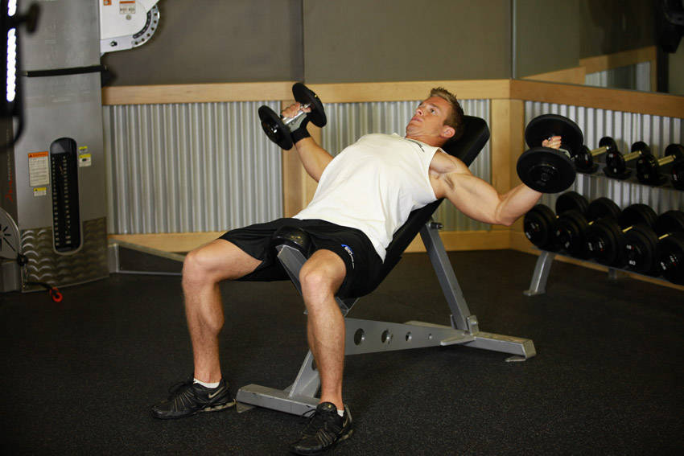
- Segure um halter em cada mão e deite-se em um banco inclinado com ângulo de no máximo 30 graus.
- Estenda os braços acima do peito, mantendo uma leve flexão nos cotovelos.
- Gire os punhos de modo que as palmas das mãos fiquem voltadas para você. Dica: os dedos mínimos devem ficar lado a lado. Essa é a posição inicial.
- Inspirando, abra os braços lentamente para os lados, mantendo-os estendidos e girando os punhos até que as palmas fiquem voltadas uma para a outra. Dica: no final do movimento, os braços estarão abertos ao lado do corpo com as palmas voltadas para o teto.
- Expirando, retorne os halteres à posição inicial invertendo o movimento e girando as mãos até que os dedos mínimos fiquem lado a lado novamente. Dica: lembre-se de que o movimento acontece apenas na articulação do ombro e no punho; não há movimento na articulação do cotovelo.
- Repita pelo número de repetições recomendado.
Aponte a câmera
para ver vídeos
Crucifixo Reto com Halteres
Dumbbell Flyes
PeitoralHalteresInicianteIsolado


- Deite-se em um banco reto segurando um halter em cada mão, apoiados sobre as coxas, com as palmas das mãos voltadas uma para a outra.
- Usando as coxas como impulso, suba os halteres um de cada vez até segurá-los à frente do corpo, na largura dos ombros, com as palmas voltadas uma para a outra. Eleve os halteres como se fosse fazer um supino, mas pare pouco antes de estender totalmente os cotovelos. Essa é a posição inicial.
- Mantendo uma leve flexão nos cotovelos para não sobrecarregar o tendão do bíceps, abra os braços para os lados em um arco amplo até sentir o alongamento no peitoral. Inspire durante essa fase do movimento. Dica: os braços devem permanecer na mesma posição do início ao fim; o movimento deve ocorrer apenas na articulação do ombro.
- Retorne os braços à posição inicial contraindo o peitoral e expirando. Dica: faça o mesmo arco de movimento usado na descida.
- Segure por um segundo na posição contraída e repita o movimento pelo número de repetições prescrito.
Aponte a câmera
para ver vídeos
Crucifixo no Cross Over
Cable Crossover
PeitoralCabo/PoliaInicianteIsoladoAuxiliares: Ombros
- Para se posicionar, ajuste as polias na posição alta (acima da cabeça), selecione a carga desejada e segure um puxador em cada mão.
- Dê um passo à frente da linha imaginária entre as duas polias, unindo os braços à frente do corpo. O tronco deve ficar levemente inclinado para a frente a partir do quadril. Essa é a posição inicial.
- Mantendo uma leve flexão nos cotovelos para não sobrecarregar o tendão do bíceps, abra os braços para os lados em um arco amplo até sentir o alongamento no peitoral. Inspire durante essa fase do movimento. Dica: os braços e o tronco devem permanecer na mesma posição do início ao fim; o movimento deve ocorrer apenas na articulação do ombro.
- Retorne os braços à posição inicial expirando. Faça o mesmo arco de movimento usado na abertura.
- Segure por um segundo na posição inicial e repita o movimento pelo número de repetições prescrito.
Aponte a câmera
para ver vídeos
Flexão Declinada (pés elevados)
Decline Push-Up
PeitoralSem equipamentoInicianteCompostoAuxiliares: Ombros, Tríceps
- Deite-se de bruços no chão e apoie as mãos afastadas cerca de 90 cm uma da outra, sustentando o tronco com os braços estendidos. Apoie os pés sobre um caixote ou banco. Essa é a posição inicial.
- Inspirando, desça o corpo até que o peito quase toque o chão.
- Expire e empurre o corpo de volta à posição inicial, contraindo o peitoral.
- Após uma breve pausa no topo, na posição contraída, desça novamente e repita pelo número de repetições necessário.
Aponte a câmera
para ver vídeos
Flexão Inclinada (mãos elevadas)
Incline Push-Up
PeitoralPeso corporalInicianteCompostoAuxiliares: Ombros, Tríceps
- Fique em pé de frente para um banco ou plataforma elevada e firme. Apoie as mãos na borda, em uma distância um pouco maior que a largura dos ombros.
- Afaste os pés do banco, mantendo os braços e o corpo alinhados. Os braços devem ficar perpendiculares ao tronco. Mantendo o corpo reto, flexione os cotovelos e desça o peito até a borda do banco ou plataforma.
- Empurre o corpo para cima até estender os braços. Repita.
Aponte a câmera
para ver vídeos
Flexão com Pegada Aberta
Push-Up Wide
PeitoralPeso corporalInicianteCompostoAuxiliares: Abdômen, Ombros, Tríceps
- Com as mãos bem afastadas, apoie o corpo nas pontas dos pés e nas mãos, em posição de prancha. Os cotovelos devem estar estendidos e o corpo alinhado. Não deixe o quadril cair. Essa é a posição inicial.
- Inspirando, flexione os cotovelos e desça o peito em direção ao chão.
- Usando a força do peitoral, empurre o corpo de volta à posição inicial estendendo os cotovelos. Expire durante essa fase.
- Após uma pausa na posição contraída, repita o movimento pelo número de repetições prescrito.
Aponte a câmera
para ver vídeos
Flexão de Braço
Pushups
PeitoralPeso corporalInicianteCompostoAuxiliares: Ombros, Tríceps

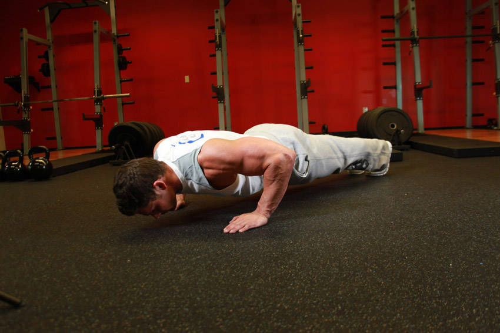
- Deite-se de bruços no chão e apoie as mãos afastadas cerca de 90 cm uma da outra, sustentando o tronco com os braços estendidos.
- Inspirando, desça o corpo até que o peito quase toque o chão.
- Expire e empurre o corpo de volta à posição inicial, contraindo o peitoral.
- Após uma breve pausa no topo, na posição contraída, desça novamente e repita pelo número de repetições necessário.
Aponte a câmera
para ver vídeos
Mergulho nas Paralelas (ênfase no peito)
Dips - Chest Version
PeitoralAcessóriosIntermediárioCompostoAuxiliares: Ombros, Tríceps

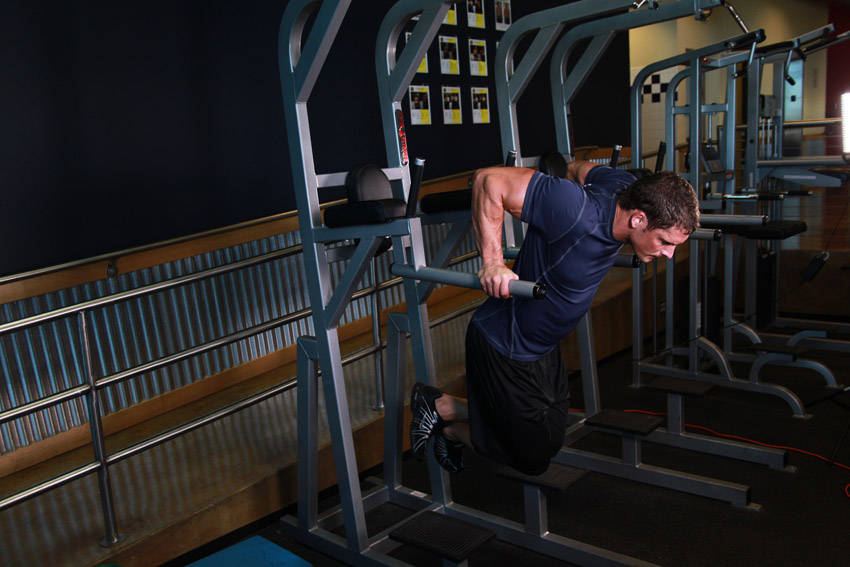
- Para este exercício você precisará de barras paralelas. Para se posicionar, sustente o corpo acima das barras com os braços totalmente estendidos. Essa é a posição inicial.
- Inspirando, desça lentamente com o tronco inclinado cerca de 30 graus para a frente e os cotovelos levemente abertos, até sentir um leve alongamento no peitoral.
- Ao sentir o alongamento, use a força do peitoral para retornar o corpo à posição inicial enquanto expira. Dica: contraia o peitoral por um segundo no topo do movimento.
- Repita o movimento pelo número de repetições prescrito.
 Aponte a câmera
Aponte a câmera
para ver vídeos
Pullover com Halter
Straight-Arm Dumbbell Pullover
PeitoralHalteresIntermediárioCompostoAuxiliares: Dorsais, Ombros, Tríceps
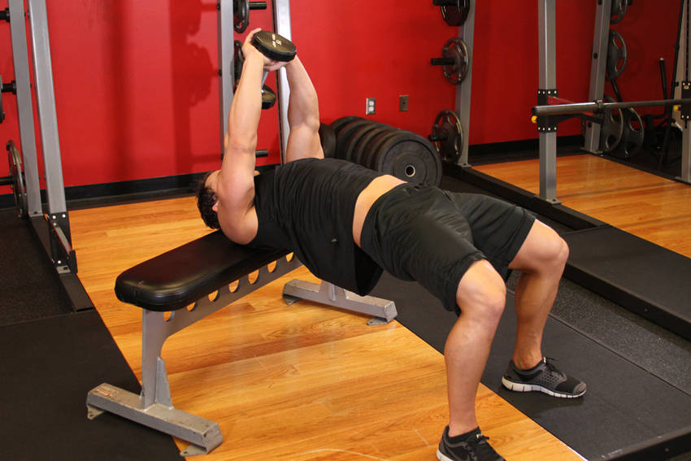
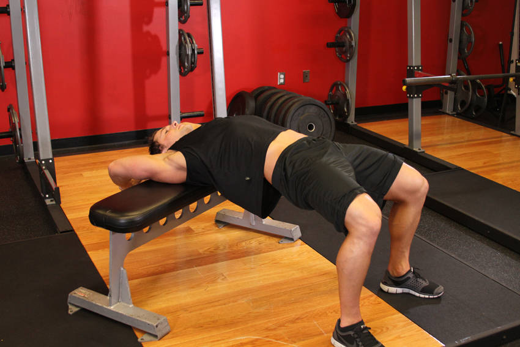
- Posicione um halter em pé sobre um banco reto.
- Garantindo que o halter permaneça firme na extremidade do banco, deite-se perpendicular a ele (com o tronco atravessado, formando uma cruz), apoiando apenas os ombros na superfície. O quadril deve ficar abaixo da linha do banco, os joelhos flexionados e os pés firmes no chão. A cabeça também fica fora do banco.
- Segure o halter com as duas mãos e mantenha-o estendido acima do peito, com os braços esticados. As duas palmas devem pressionar a parte interna de uma das extremidades do halter. Essa é a posição inicial.
Atenção: sempre confira se o halter está bem firme. Um halter com anilhas frouxas pode se desmontar e cair no seu rosto.
- Mantendo os braços estendidos, desça o peso lentamente em arco por trás da cabeça, inspirando, até sentir o alongamento no peitoral.
- Nesse ponto, traga o halter de volta à posição inicial pelo mesmo arco da descida, expirando durante o movimento.
- Segure o peso na posição inicial por um segundo e repita o movimento pelo número de repetições prescrito.
Aponte a câmera
para ver vídeos
Supino Declinado com Barra
Decline Barbell Bench Press
PeitoralBarraInicianteCompostoAuxiliares: Ombros, Tríceps
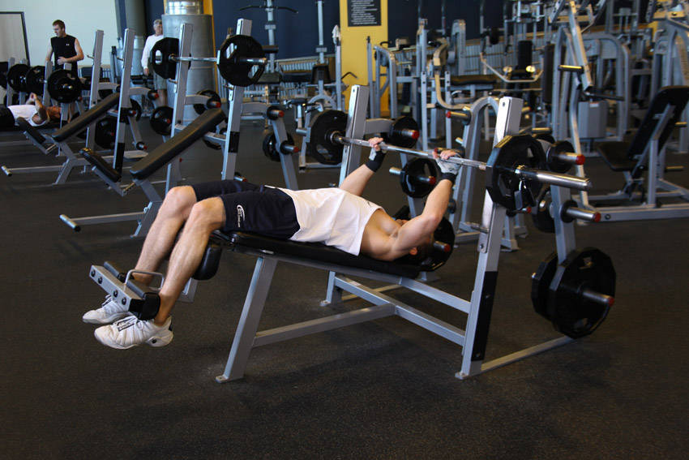
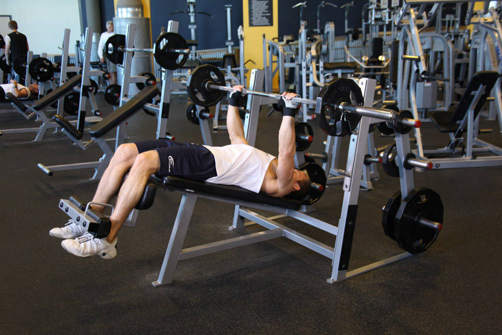
- Prenda as pernas no apoio da extremidade do banco declinado e deite-se lentamente no banco.
- Com uma pegada média (aquela que forma um ângulo de 90 graus entre o antebraço e o braço no meio do movimento), retire a barra do suporte e segure-a acima do corpo com os braços estendidos. Os braços devem ficar perpendiculares ao chão. Essa é a posição inicial. Dica: para proteger o manguito rotador, o ideal é contar com um parceiro para ajudar a retirar a barra do suporte.
- Inspirando, desça a barra lentamente até senti-la tocar a parte inferior do peitoral.
- Após uma pausa de um segundo, retorne a barra à posição inicial expirando e empurrando com a força do peitoral. Estenda os braços e contraia o peitoral na posição contraída, segure por um segundo e comece a descer lentamente de novo. Dica: a descida deve levar pelo menos o dobro do tempo da subida.
- Repita o movimento pelo número de repetições prescrito.
- Ao terminar, recoloque a barra no suporte.
Aponte a câmera
para ver vídeos
Supino Declinado com Halteres
Decline Dumbbell Bench Press
PeitoralHalteresInicianteCompostoAuxiliares: Ombros, Tríceps
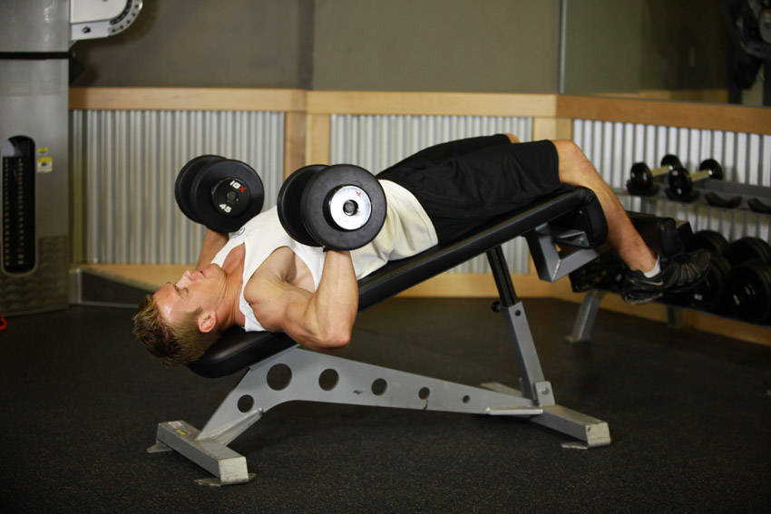
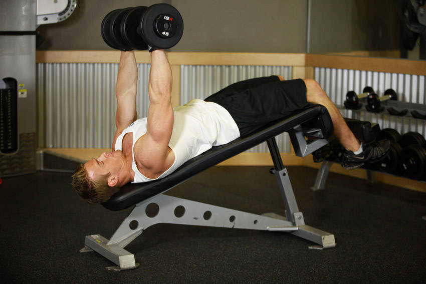
- Prenda as pernas no apoio da extremidade do banco declinado e deite-se com um halter em cada mão, apoiados sobre as coxas, com as palmas voltadas uma para a outra.
- Já deitado, posicione os halteres à frente do corpo, na largura dos ombros.
- Na largura dos ombros, gire os punhos para a frente de modo que as palmas fiquem voltadas para longe de você. Essa é a posição inicial.
- Desça os halteres lentamente para os lados do corpo enquanto inspira, mantendo controle total dos halteres o tempo todo. Dica: durante todo o movimento, os antebraços devem permanecer perpendiculares ao chão.
- Expirando, empurre os halteres para cima usando a força do peitoral. Estenda os braços na posição contraída, contraia o peitoral, segure por um segundo e então comece a descer lentamente. Dica: a descida deve levar pelo menos o dobro do tempo da subida.
- Repita o movimento pelo número de repetições prescrito no seu programa de treino.
Aponte a câmera
para ver vídeos
Supino Inclinado com Barra
Barbell Incline Bench Press - Medium Grip
PeitoralBarraInicianteCompostoAuxiliares: Ombros, Tríceps
- Deite-se em um banco inclinado. Com uma pegada média (aquela que forma um ângulo de 90 graus entre o antebraço e o braço no meio do movimento), retire a barra do suporte e segure-a acima do corpo com os braços estendidos. Essa é a posição inicial.
- Inspirando, desça a barra lentamente até senti-la tocar a parte superior do peitoral.
- Após uma pausa de um segundo, retorne a barra à posição inicial expirando e empurrando com a força do peitoral. Estenda os braços na posição contraída, contraia o peitoral, segure por um segundo e comece a descer lentamente de novo. Dica: a descida deve levar pelo menos o dobro do tempo da subida.
- Repita o movimento pelo número de repetições prescrito.
- Ao terminar, recoloque a barra no suporte.
Aponte a câmera
para ver vídeos
Supino Inclinado com Halteres
Incline Dumbbell Press
PeitoralHalteresInicianteCompostoAuxiliares: Ombros, Tríceps
- Deite-se em um banco inclinado com um halter em cada mão apoiado sobre as coxas, com as palmas das mãos voltadas uma para a outra.
- Usando as coxas como impulso, suba os halteres um de cada vez até segurá-los na altura dos ombros.
- Com os halteres na largura dos ombros, gire os punhos para a frente de modo que as palmas fiquem voltadas para longe de você. Essa é a posição inicial.
- Mantenha controle total dos halteres o tempo todo. Expire e empurre os halteres para cima com a força do peitoral.
- Estenda os braços no topo, segure por um segundo e então comece a descer o peso lentamente. Dica: o ideal é que a descida leve cerca do dobro do tempo da subida.
- Repita o movimento pelo número de repetições prescrito.
- Ao terminar, apoie os halteres sobre as coxas e depois no chão. Essa é a forma mais segura de soltá-los.
Aponte a câmera
para ver vídeos
Supino Reto com Barra
Barbell Bench Press - Medium Grip
PeitoralBarraInicianteCompostoAuxiliares: Ombros, Tríceps
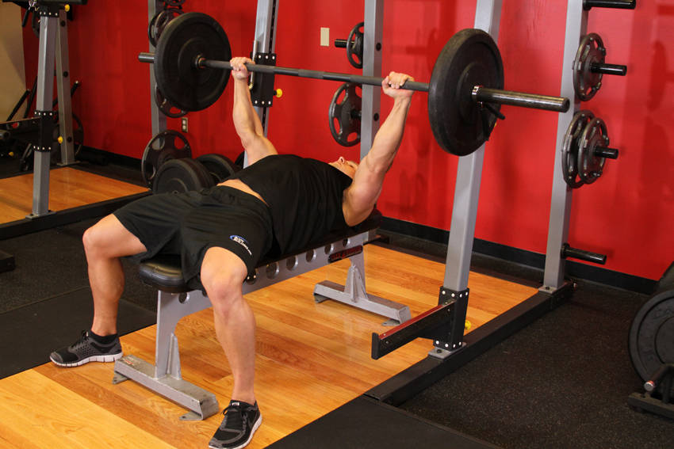
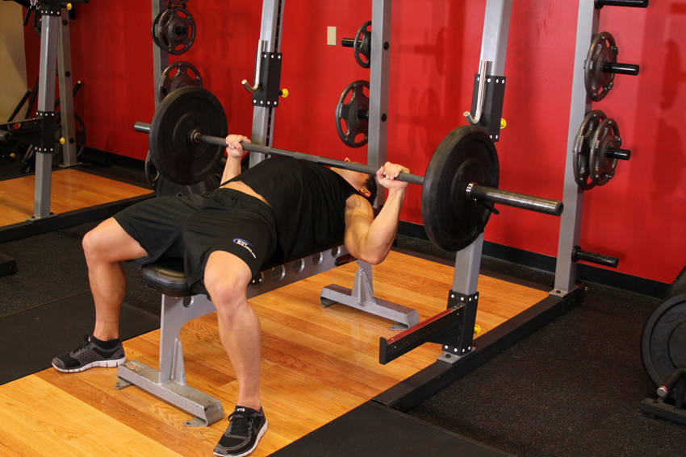
- Deite-se em um banco reto. Com uma pegada média (aquela que forma um ângulo de 90 graus entre o antebraço e o braço no meio do movimento), retire a barra do suporte e segure-a acima do corpo com os braços estendidos. Essa é a posição inicial.
- A partir da posição inicial, inspire e desça a barra lentamente até tocar a região central do peitoral.
- Após uma breve pausa, empurre a barra de volta à posição inicial enquanto expira, concentrando-se em usar a força do peitoral. Estenda os braços e contraia o peitoral no topo do movimento, segure por um segundo e comece a descer lentamente de novo. Dica: o ideal é que a descida leve cerca do dobro do tempo da subida.
- Repita o movimento pelo número de repetições prescrito.
- Ao terminar, recoloque a barra no suporte.
Aponte a câmera
para ver vídeos
Supino Reto com Halteres
Dumbbell Bench Press
PeitoralHalteresInicianteCompostoAuxiliares: Ombros, Tríceps

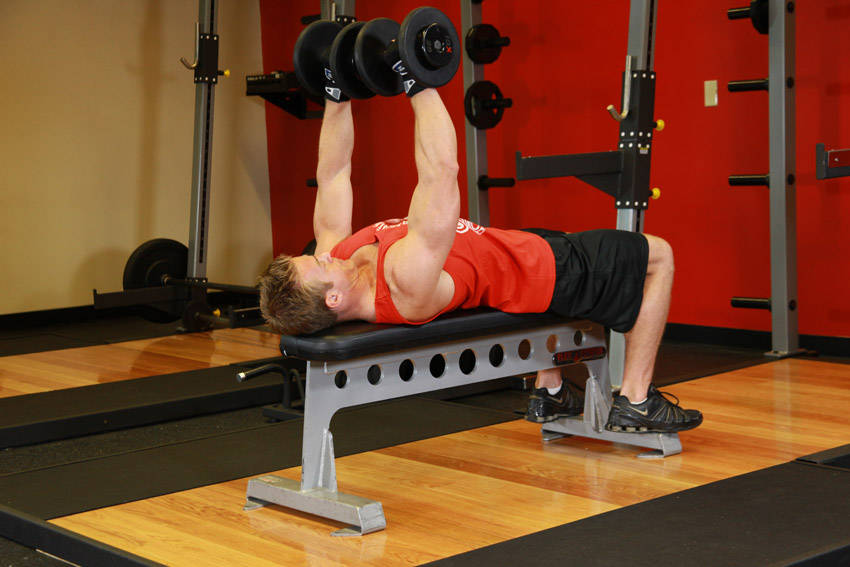
- Deite-se em um banco reto com um halter em cada mão apoiado sobre as coxas, com as palmas das mãos voltadas uma para a outra.
- Usando as coxas como impulso, suba os halteres um de cada vez até segurá-los à frente do corpo, na largura dos ombros.
- Na largura dos ombros, gire os punhos para a frente de modo que as palmas fiquem voltadas para longe de você. Os halteres devem ficar ao lado do peito, com o braço e o antebraço formando um ângulo de 90 graus. Mantenha controle total dos halteres o tempo todo. Essa é a posição inicial.
- Expirando, empurre os halteres para cima com a força do peitoral. Estenda os braços no topo e contraia o peitoral, segure por um segundo e comece a descer lentamente. Dica: o ideal é que a descida leve cerca do dobro do tempo da subida.
- Repita o movimento pelo número de repetições prescrito no seu programa de treino.
Aponte a câmera
para ver vídeos
Supino na Máquina
Machine Bench Press
PeitoralMáquinaInicianteCompostoAuxiliares: Ombros, Tríceps
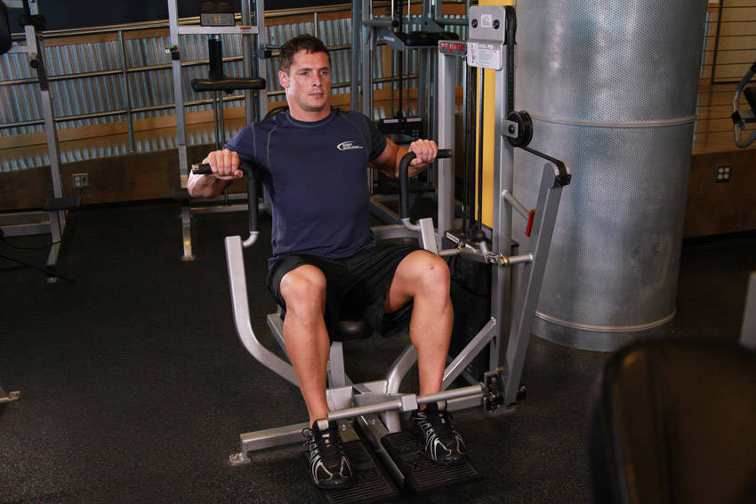
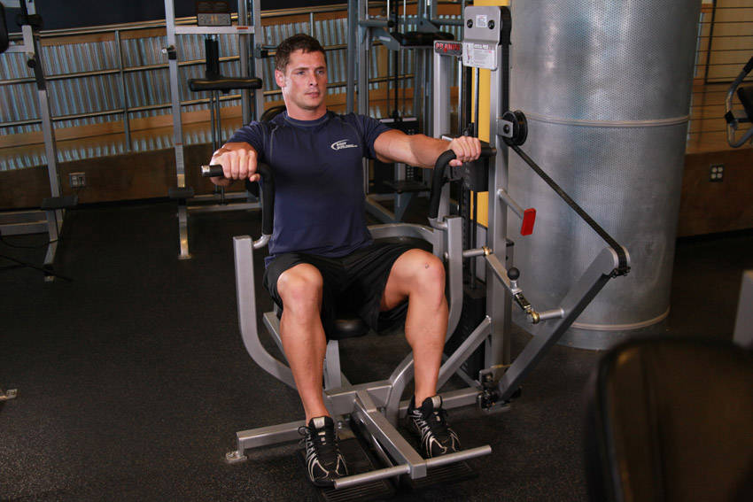
- Sente-se na máquina de supino e selecione a carga.
- Pise no pedal da máquina para trazer os pegadores para a frente, de modo que você consiga segurá-los e estender totalmente os braços.
- Segure os pegadores com pegada pronada e eleve os cotovelos até que os braços fiquem paralelos ao chão, ao lado do tronco. Dica: os antebraços apontarão para a frente, já que você está segurando os pegadores. Com os pegadores à frente e os braços estendidos, você estará na posição inicial.
- Inspirando, deixe os pegadores voltarem em sua direção.
- Empurre os pegadores para longe do corpo, contraindo o peitoral e expirando. Segure a contração por um segundo antes de retornar à posição inicial.
- Repita pelo número de repetições recomendado.
- Ao terminar, pise no pedal novamente e retorne os pegadores lentamente à posição original.
Aponte a câmera
para ver vídeos
Voador na Máquina (Peck Deck)
Butterfly
PeitoralMáquinaInicianteIsolado
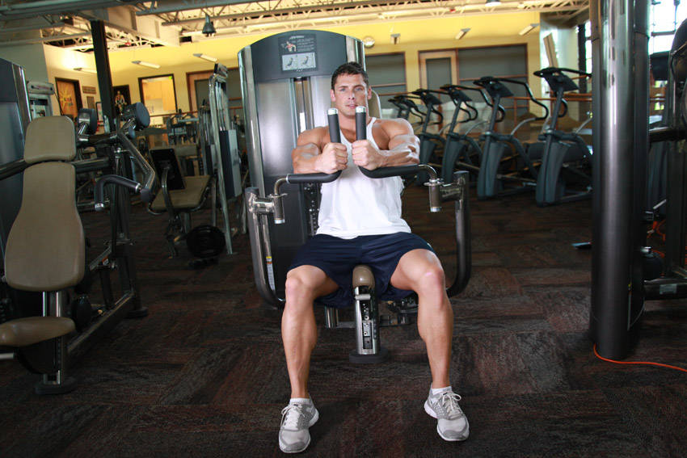

- Sente-se na máquina com as costas totalmente apoiadas no encosto.
- Segure os pegadores. Dica: os braços devem ficar paralelos ao chão; ajuste a máquina conforme necessário. Essa é a posição inicial.
- Empurre os pegadores um em direção ao outro lentamente, contraindo o peitoral no centro do movimento. Expire durante essa fase e segure a contração por um segundo.
- Retorne lentamente à posição inicial enquanto inspira, até sentir o peitoral totalmente alongado.
- Repita pelo número de repetições recomendado.
Aponte a câmera
para ver vídeos
02
Costas
18 exercícios neste capítulo. Cada ficha traz músculo alvo, equipamento,
nível, fotos da posição inicial e final, execução passo a passo e QR code com vídeos.
- Barra Fixa (pegada pronada)
- Barra Fixa Supinada (chin-up)
- Encolhimento de Ombros com Barra
- Encolhimento de Ombros com Halteres
- Extensão Lombar (banco romano)
- Levantamento Terra Parcial (rack pull)
- Levantamento Terra com Barra
- Pulldown com Braços Estendidos
- Puxada Alta com Pegada Aberta
- Puxada Alta com Pegada Fechada
- Puxada com Triângulo
- Remada Articulada na Máquina
- Remada Baixa Sentada (cabo)
- Remada Cavalinho (barra T)
- Remada Curvada com Barra
- Remada Curvada com Halteres
- Remada Invertida (peso corporal)
- Remada Unilateral com Halter (serrote)
Barra Fixa (pegada pronada)
Pullups
DorsaisPeso corporalInicianteCompostoAuxiliares: Bíceps, Meio das costas

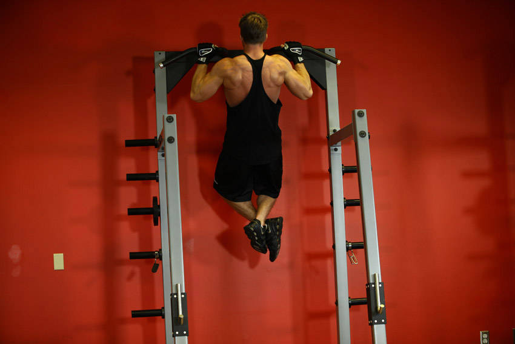
- Segure a barra fixa com pegada pronada (palmas voltadas para a frente), na largura prescrita. Observação sobre as pegadas: na pegada aberta, as mãos ficam afastadas além da largura dos ombros; na pegada média, na mesma largura dos ombros; e na pegada fechada, mais próximas que a largura dos ombros.
- Com os braços estendidos segurando a barra na largura escolhida, incline o tronco para trás cerca de 30 graus, acentuando a curvatura da lombar e projetando o peito para a frente. Essa é a posição inicial.
- Puxe o tronco para cima até a barra tocar a parte superior do peito, levando os ombros e os braços para baixo e para trás. Expire durante essa fase do movimento. Dica: concentre-se em contrair os músculos das costas ao atingir a contração máxima. O tronco deve permanecer estável, movendo-se apenas os braços. Os antebraços não devem fazer nada além de segurar a barra.
- Após um segundo na posição contraída, inspire e desça o tronco lentamente de volta à posição inicial, até os braços ficarem totalmente estendidos e os dorsais completamente alongados.
- Repita o movimento pelo número de repetições prescrito.
Aponte a câmera
para ver vídeos
Barra Fixa Supinada (chin-up)
Chin-Up
DorsaisPeso corporalInicianteCompostoAuxiliares: Bíceps, Antebraços, Meio das costas


- Segure a barra fixa com pegada supinada (palmas voltadas para você) e mãos mais próximas que a largura dos ombros.
- Com os braços estendidos segurando a barra na largura escolhida, mantenha o tronco o mais reto possível, acentuando a curvatura da lombar e projetando o peito para a frente. Essa é a posição inicial. Dica: manter o tronco o mais reto possível maximiza o trabalho do bíceps e minimiza o envolvimento das costas.
- Expirando, puxe o tronco para cima até a cabeça ficar aproximadamente na altura da barra. Concentre-se em usar o bíceps para executar o movimento e mantenha os cotovelos próximos ao corpo. Dica: o tronco deve permanecer estável, movendo-se apenas os braços. Os antebraços não devem fazer nada além de segurar a barra.
- Após um segundo contraindo o bíceps na posição contraída, desça o tronco lentamente de volta à posição inicial, até os braços ficarem totalmente estendidos. Inspire durante essa fase do movimento.
- Repita o movimento pelo número de repetições prescrito.
Aponte a câmera
para ver vídeos
Encolhimento de Ombros com Barra
Barbell Shrug
TrapézioBarraInicianteIsolado
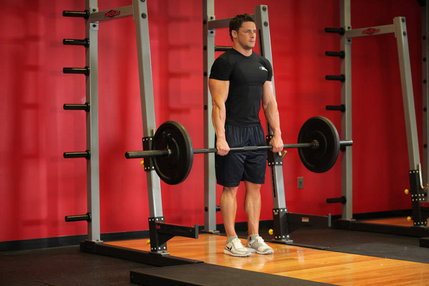
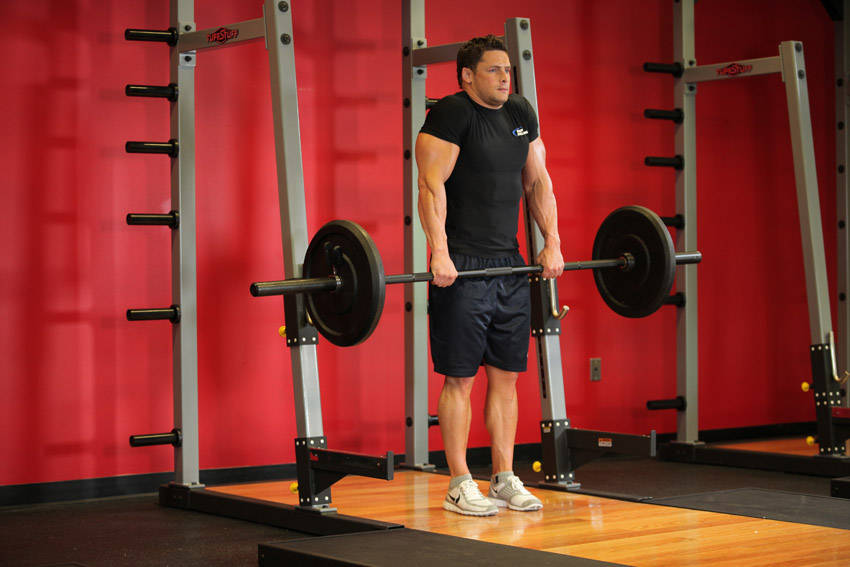
- Fique em pé, com a coluna ereta e os pés na largura dos ombros, segurando a barra à frente do corpo com as duas mãos em pegada pronada (palmas voltadas para as coxas). Dica: as mãos devem ficar um pouco mais afastadas que a largura dos ombros. Você pode usar straps para melhorar a pegada. Esta é a posição inicial.
- Eleve os ombros o mais alto que conseguir enquanto solta o ar e segure a contração por um segundo. Dica: evite usar o bíceps para ajudar a levantar a barra.
- Retorne lentamente à posição inicial enquanto inspira.
- Repita pelo número recomendado de repetições.
Aponte a câmera
para ver vídeos
Encolhimento de Ombros com Halteres
Dumbbell Shrug
TrapézioHalteresInicianteIsolado

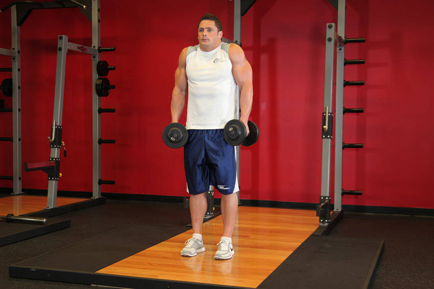
- Fique em pé, com a coluna ereta, segurando um halter em cada mão (palmas voltadas para o corpo) e os braços estendidos ao lado do tronco.
- Eleve os halteres encolhendo os ombros o mais alto possível enquanto solta o ar. Segure a contração no topo por um segundo. Dica: os braços devem permanecer estendidos o tempo todo. Evite usar o bíceps para ajudar a levantar os halteres — apenas os ombros devem subir e descer.
- Desça os halteres de volta à posição inicial.
- Repita pelo número recomendado de repetições.
Aponte a câmera
para ver vídeos
Extensão Lombar (banco romano)
Hyperextensions (Back Extensions)
LombarAcessóriosInicianteIsoladoAuxiliares: Glúteos, Posteriores de coxa

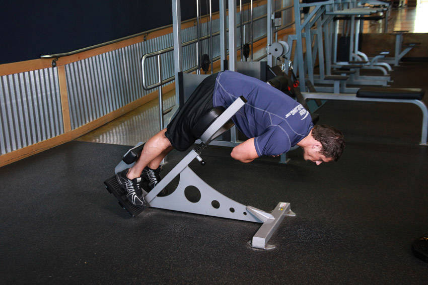
- Deite-se de bruços no banco romano, prendendo bem os tornozelos sob os apoios para os pés.
- Se possível, ajuste o apoio superior de modo que a parte de cima das coxas fique apoiada sobre a almofada, deixando espaço suficiente para flexionar o quadril sem nenhuma restrição.
- Com o corpo alinhado, cruze os braços à frente do peito (opção preferível) ou coloque-os atrás da cabeça. Esta é a posição inicial. Dica: você também pode segurar uma anilha junto ao peito, sob os braços cruzados, para adicionar resistência.
- Comece a descer o tronco lentamente, flexionando o quadril o máximo que conseguir, mantendo as costas retas. Inspire durante o movimento. Continue descendo até sentir um bom alongamento nos posteriores de coxa e até o ponto em que não seja mais possível avançar sem curvar as costas. Dica: nunca arredonde a coluna durante o exercício. A amplitude varia de pessoa para pessoa — o importante é ir até onde o seu corpo permitir sem curvar as costas.
- Suba o tronco lentamente de volta à posição inicial. Dica: evite a tentação de hiperestender a coluna além da linha reta e não balance o tronco em nenhum momento, para proteger a lombar de lesões.
- Repita pelo número recomendado de repetições.
Aponte a câmera
para ver vídeos
Levantamento Terra Parcial (rack pull)
Rack Pulls
LombarBarraIntermediárioCompostoAuxiliares: Antebraços, Glúteos, Posteriores de coxa
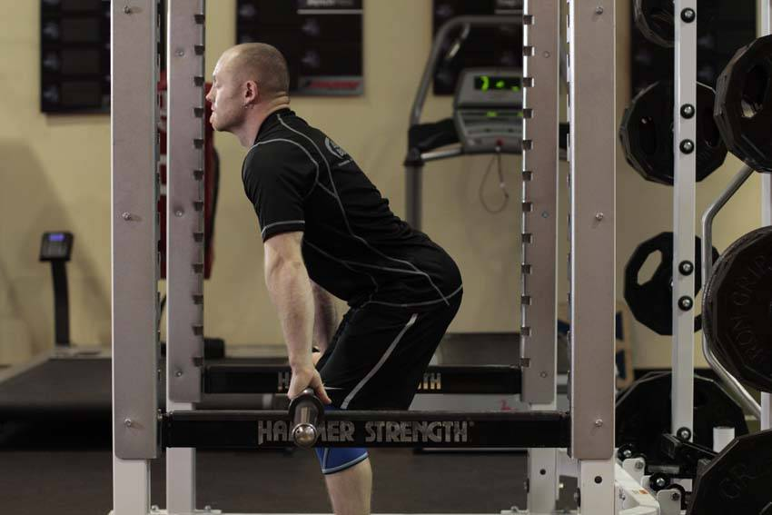
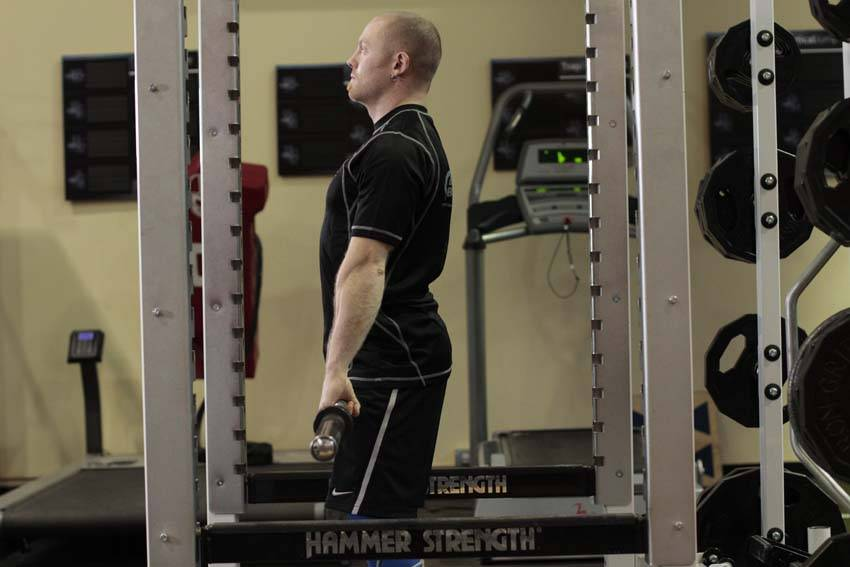
- Posicione a barra sobre os pinos de segurança de um power rack, ajustados na altura desejada: logo abaixo dos joelhos, logo acima ou na metade das coxas. Posicione-se junto à barra na postura correta do levantamento terra: pés sob o quadril, pegada na largura dos ombros, coluna neutra com o peito aberto e quadril para trás para ativar os posteriores de coxa. Como a carga costuma ser alta, você pode usar pegada mista, pegada hook ou straps para ajudar a segurar o peso.
- Com o olhar direcionado para a frente, estenda quadris e joelhos, puxando a barra para cima e para trás até a extensão completa do corpo. Leve os ombros para trás ao finalizar o movimento.
- Retorne a barra aos pinos e repita.
Aponte a câmera
para ver vídeos
Levantamento Terra com Barra
Barbell Deadlift
LombarBarraIntermediárioCompostoAuxiliares: Panturrilhas, Antebraços, Glúteos


- Fique em pé diante de uma barra carregada.
- Mantendo as costas o mais retas possível, flexione os joelhos, incline o tronco à frente e segure a barra com pegada pronada média (na largura dos ombros). Esta é a posição inicial do exercício. Dica: se for difícil sustentar a barra com essa pegada, use pegada mista ou straps.
- Segurando a barra, inicie o levantamento empurrando o chão com as pernas e, ao mesmo tempo, erguendo o tronco até a posição vertical, enquanto solta o ar. Na posição em pé, projete o peito para a frente e contraia as costas levando as escápulas para trás, como um soldado em posição de sentido.
- Volte à posição inicial flexionando os joelhos e, ao mesmo tempo, inclinando o tronco à frente a partir do quadril, sempre com as costas retas. Quando as anilhas tocarem o chão, você estará de volta à posição inicial, pronto para a próxima repetição.
- Execute o número de repetições prescrito no programa.
Aponte a câmera
para ver vídeos
Pulldown com Braços Estendidos
Straight-Arm Pulldown
DorsaisCabo/PoliaInicianteIsolado
- Segure a barra reta presa à polia alta da máquina de puxada, com pegada pronada (palmas para baixo) mais aberta que a largura dos ombros, e dê cerca de dois passos para trás.
- Incline o tronco à frente em torno de 30 graus, com os braços totalmente estendidos à sua frente e uma leve flexão nos cotovelos. Se os braços não estiverem completamente estendidos, afaste-se um pouco mais da máquina. Com os braços estendidos e o tronco levemente inclinado, contraia o dorsal — você está pronto para começar.
- Mantendo os braços estendidos, puxe a barra para baixo contraindo o dorsal até que as mãos fiquem ao lado das coxas. Solte o ar durante essa fase.
- Mantendo os braços estendidos, retorne à posição inicial enquanto inspira.
- Repita pelo número recomendado de repetições.
Aponte a câmera
para ver vídeos
Puxada Alta com Pegada Aberta
Wide-Grip Lat Pulldown
DorsaisCabo/PoliaInicianteCompostoAuxiliares: Bíceps, Meio das costas, Ombros
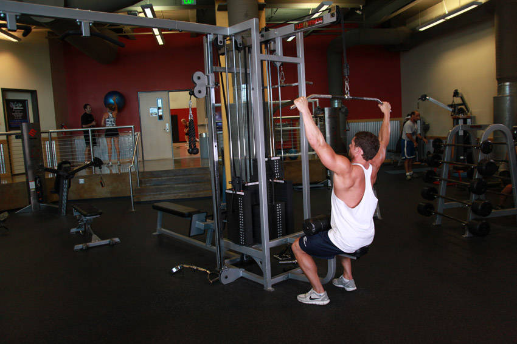
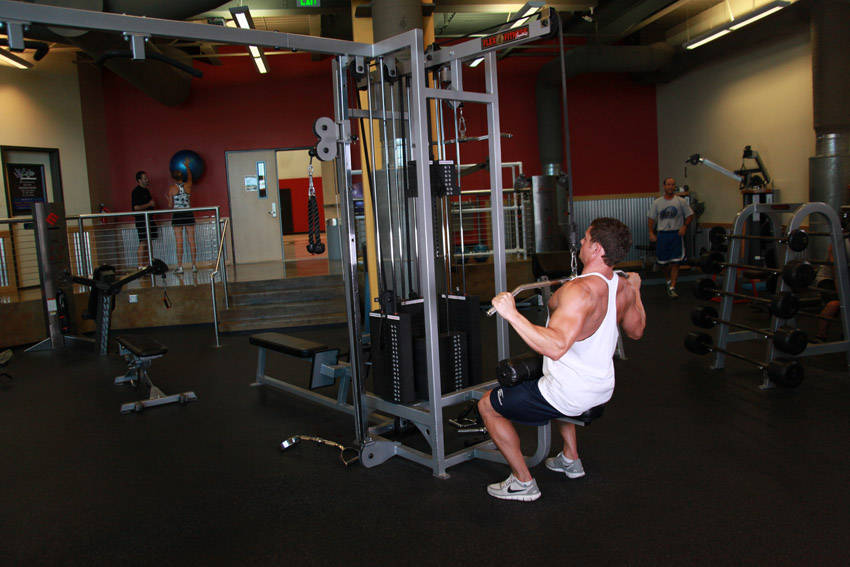
- Sente-se na máquina de puxada alta com a barra larga presa à polia superior. Ajuste o apoio de joelhos à sua altura — ele impede que o corpo seja erguido pela carga presa à barra.
- Segure a barra com as palmas voltadas para a frente, na pegada prescrita. Sobre as pegadas: na pegada aberta, as mãos ficam mais afastadas que a largura dos ombros; na pegada média, na largura dos ombros; e na pegada fechada, mais próximas que a largura dos ombros.
- Com os dois braços estendidos à frente segurando a barra na pegada escolhida, incline o tronco para trás em torno de 30 graus, mantendo a curvatura natural da lombar e o peito projetado para a frente. Esta é a posição inicial.
- Soltando o ar, puxe a barra para baixo até tocar a parte superior do peito, levando os ombros e os braços para baixo e para trás. Dica: concentre-se em contrair os músculos das costas ao atingir a contração máxima. O tronco deve permanecer imóvel — apenas os braços se movem. Os antebraços servem apenas para segurar a barra; não tente puxá-la com eles.
- Após um segundo na posição contraída, apertando as escápulas uma contra a outra, retorne a barra lentamente à posição inicial, até os braços ficarem totalmente estendidos e o dorsal completamente alongado. Inspire durante essa fase do movimento.
- Repita o movimento pelo número prescrito de repetições.
Aponte a câmera
para ver vídeos
Puxada Alta com Pegada Fechada
Close-Grip Front Lat Pulldown
DorsaisCabo/PoliaInicianteCompostoAuxiliares: Bíceps, Meio das costas, Ombros

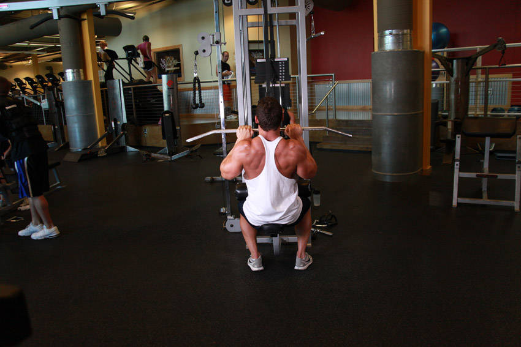
- Sente-se na máquina de puxada alta com a barra presa à polia superior. Ajuste o apoio de joelhos à sua altura — ele impede que o corpo seja erguido pela carga presa à barra.
- Segure a barra com as palmas voltadas para a frente, na pegada prescrita. Sobre as pegadas: na pegada aberta, as mãos ficam mais afastadas que a largura dos ombros; na pegada média, na largura dos ombros; e na pegada fechada, mais próximas que a largura dos ombros.
- Com os dois braços estendidos à frente, segurando a barra na pegada escolhida, incline o tronco para trás em torno de 30 graus, mantendo a curvatura natural da lombar e o peito projetado para a frente. Esta é a posição inicial.
- Soltando o ar, puxe a barra para baixo até tocar a parte superior do peito, levando os ombros e os braços para baixo e para trás. Dica: concentre-se em contrair os músculos das costas ao atingir a contração máxima. O tronco deve permanecer imóvel (apenas os braços se movem). Os antebraços servem apenas para segurar a barra; não tente puxá-la com eles.
- Após um segundo na posição contraída, apertando as escápulas uma contra a outra, retorne a barra lentamente à posição inicial, até os braços ficarem totalmente estendidos e o dorsal completamente alongado. Inspire durante essa fase do movimento.
- Repita o movimento pelo número prescrito de repetições.
Aponte a câmera
para ver vídeos
Puxada com Triângulo
V-Bar Pulldown
DorsaisCabo/PoliaIntermediárioCompostoAuxiliares: Bíceps, Meio das costas, Ombros

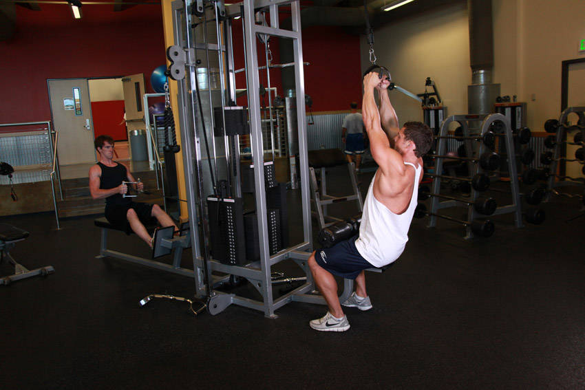
- Sente-se na máquina de puxada com o triângulo preso à polia superior.
- Ajuste o apoio de joelhos à sua altura — ele impede que o corpo seja erguido pela carga presa ao equipamento.
- Segure o triângulo com as palmas voltadas uma para a outra (pegada neutra). Projete o peito para a frente e incline o tronco levemente para trás (cerca de 30 graus) para ativar melhor o dorsal. Esta é a posição inicial.
- Usando o dorsal, puxe o triângulo para baixo enquanto aperta as escápulas. Continue até que o peito quase toque o triângulo. Solte o ar durante o movimento. Dica: mantenha o tronco imóvel do início ao fim.
- Após segurar a contração por um segundo, retorne o triângulo lentamente à posição inicial enquanto inspira.
- Repita pelo número prescrito de repetições.
Aponte a câmera
para ver vídeos
Remada Articulada na Máquina
Leverage Iso Row
DorsaisMáquinaInicianteCompostoAuxiliares: Bíceps, Meio das costas
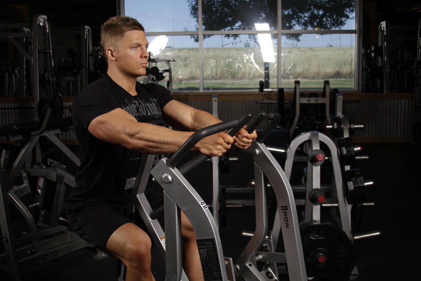
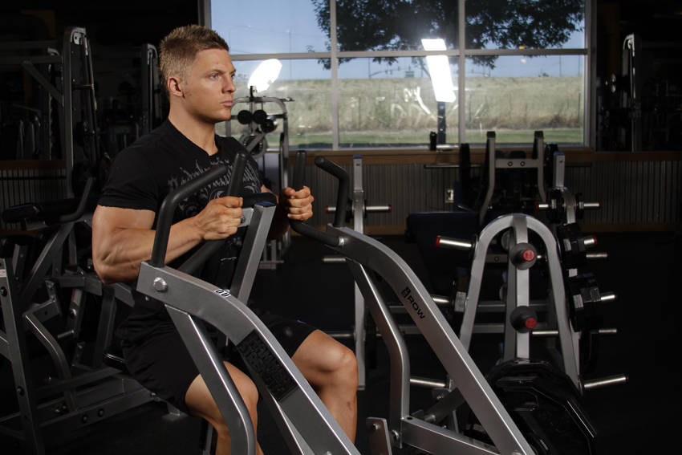
- Coloque a carga adequada na máquina e ajuste a altura do banco de modo que as pegadas fiquem na altura do peito. Segure as pegadas com pegada neutra ou pronada. Esta é a posição inicial.
- Puxe as pegadas em direção ao tronco, retraindo as escápulas enquanto flexiona os cotovelos.
- Faça uma pausa no ponto final do movimento e retorne lentamente à posição inicial. Ao fazer várias repetições, evite devolver o peso totalmente ao apoio, para manter a tensão nos músculos trabalhados.
Aponte a câmera
para ver vídeos
Remada Baixa Sentada (cabo)
Seated Cable Rows
Meio das costasCabo/PoliaInicianteCompostoAuxiliares: Bíceps, Dorsais, Ombros


- Para este exercício você precisará de uma máquina de remada baixa com triângulo. Observação: o triângulo permite a pegada neutra, com as palmas das mãos voltadas uma para a outra. Para entrar na posição inicial, sente-se na máquina e apoie os pés na plataforma frontal, mantendo os joelhos levemente flexionados, sem travá-los.
- Incline-se à frente, mantendo o alinhamento natural da coluna, e segure o triângulo.
- Com os braços estendidos, puxe o corpo para trás até que o tronco forme um ângulo de 90 graus com as pernas. As costas devem ficar levemente arqueadas e o peito projetado para a frente. Você deve sentir um bom alongamento no dorsal segurando o triângulo à sua frente. Esta é a posição inicial do exercício.
- Mantendo o tronco imóvel, puxe o triângulo em direção ao corpo, com os braços próximos ao tronco, até tocar o abdômen. Solte o ar durante o movimento. Nesse ponto, contraia com força os músculos das costas. Segure a contração por um segundo e retorne lentamente à posição inicial enquanto inspira.
- Repita pelo número recomendado de repetições.
Aponte a câmera
para ver vídeos
Remada Cavalinho (barra T)
T-Bar Row with Handle
Meio das costasBarraInicianteCompostoAuxiliares: Bíceps, Dorsais
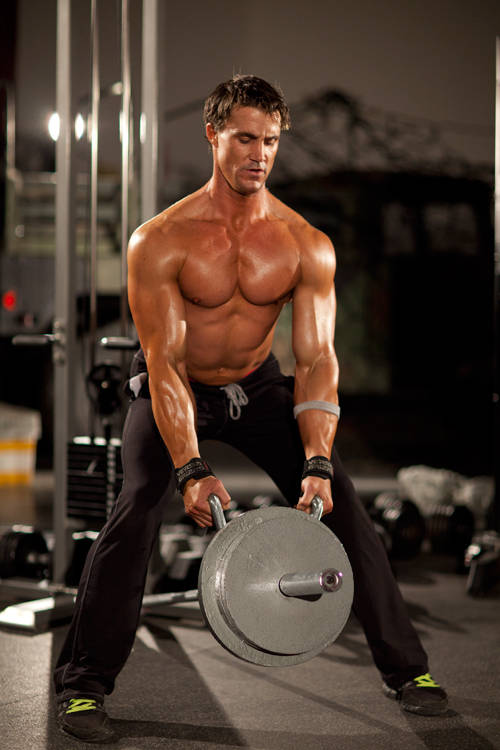
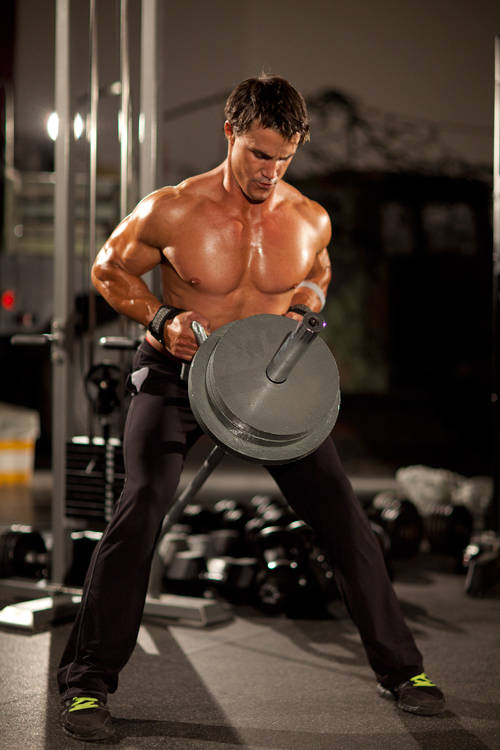
- Encaixe uma das extremidades da barra em um suporte landmine ou em um canto da parede, para que ela não se mova, e coloque a carga adequada na outra extremidade.
- Fique em pé sobre a barra e posicione a pegada de remada (triângulo aberto) sob ela, junto à presilha das anilhas. Usando o quadril e as pernas, levante-se até ficar em pé.
- Adote uma base ampla, com o quadril para trás e o peito aberto. Os braços devem ficar estendidos. Esta é a posição inicial.
- Puxe a carga em direção à parte superior do abdômen, retraindo as escápulas e flexionando os cotovelos. Não dê trancos nem roube durante o movimento.
- Após uma breve pausa, retorne à posição inicial.
Aponte a câmera
para ver vídeos
Remada Curvada com Barra
Bent Over Barbell Row
Meio das costasBarraInicianteCompostoAuxiliares: Bíceps, Dorsais, Ombros

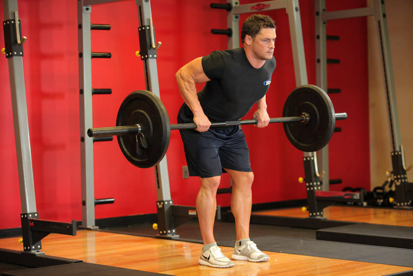
- Segurando a barra com pegada pronada (palmas para baixo), flexione levemente os joelhos e incline o tronco à frente a partir do quadril, mantendo as costas retas, até ficar quase paralelo ao chão. Dica: mantenha a cabeça erguida. A barra deve ficar pendurada diretamente à sua frente, com os braços perpendiculares ao chão e ao tronco. Esta é a posição inicial.
- Mantendo o tronco imóvel, solte o ar e puxe a barra em direção ao corpo. Mantenha os cotovelos junto ao tronco e use os antebraços apenas para segurar o peso. No topo da contração, aperte os músculos das costas e segure por um breve instante.
- Em seguida, inspire e desça a barra lentamente de volta à posição inicial.
- Repita pelo número recomendado de repetições.
Aponte a câmera
para ver vídeos
Remada Curvada com Halteres
Bent Over Two-Dumbbell Row
Meio das costasHalteresInicianteCompostoAuxiliares: Bíceps, Dorsais, Ombros
- Com um halter em cada mão (palmas voltadas para o corpo), flexione levemente os joelhos e incline o tronco à frente a partir do quadril, mantendo as costas retas, até ficar quase paralelo ao chão. Dica: mantenha a cabeça erguida. Os halteres devem ficar pendurados diretamente à sua frente, com os braços perpendiculares ao chão e ao tronco. Esta é a posição inicial.
- Mantendo o tronco imóvel, puxe os halteres para o lado do corpo enquanto solta o ar, com os cotovelos próximos ao tronco (os antebraços servem apenas para segurar os pesos). No topo da contração, aperte os músculos das costas e segure por um segundo.
- Desça os halteres lentamente de volta à posição inicial enquanto inspira.
- Repita pelo número recomendado de repetições.
Aponte a câmera
para ver vídeos
Remada Invertida (peso corporal)
Inverted Row
Meio das costasSem equipamentoInicianteCompostoAuxiliares: Dorsais
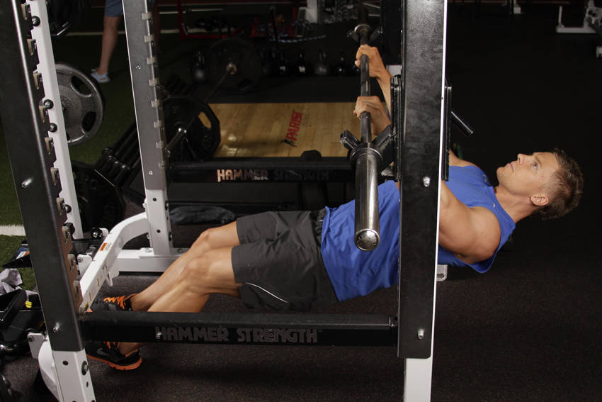
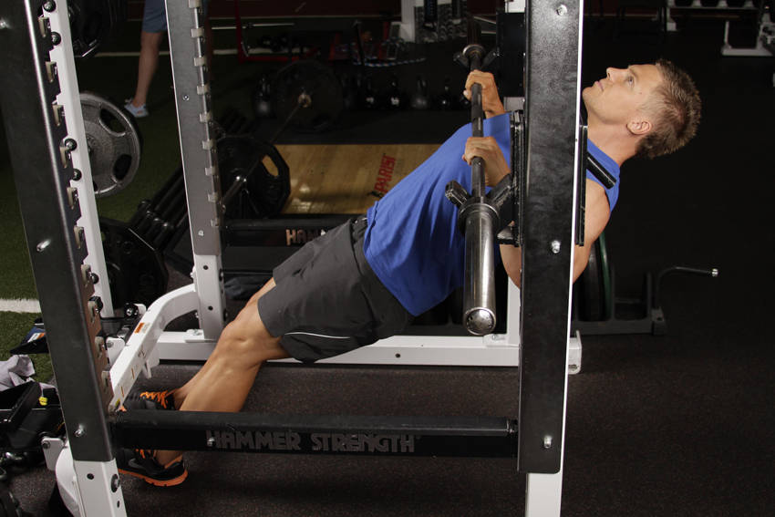
- Posicione uma barra em um rack, aproximadamente na altura da cintura. Você também pode usar o smith.
- Segure a barra com pegada mais aberta que a largura dos ombros e posicione o corpo suspenso por baixo dela. O corpo deve ficar alinhado, com os calcanhares no chão e os braços totalmente estendidos. Esta é a posição inicial.
- Inicie o movimento flexionando os cotovelos e puxando o peito em direção à barra. Retraia as escápulas durante a execução.
- Faça uma pausa no topo do movimento e retorne à posição inicial.
- Repita pelo número desejado de repetições.
Aponte a câmera
para ver vídeos
Remada Unilateral com Halter (serrote)
One-Arm Dumbbell Row
Meio das costasHalteresInicianteCompostoAuxiliares: Bíceps, Dorsais, Ombros


- Escolha um banco reto e coloque um halter em cada lado dele.
- Apoie o joelho direito sobre uma das extremidades do banco, incline o tronco à frente a partir do quadril até que fique paralelo ao chão e apoie a mão direita na outra extremidade do banco.
- Com a mão esquerda, pegue o halter do chão e segure-o mantendo a lombar reta. A palma da mão deve ficar voltada para o corpo. Esta é a posição inicial.
- Puxe o halter para cima, em direção à lateral do peito, mantendo o braço junto ao corpo e o tronco imóvel. Solte o ar durante essa fase. Dica: concentre-se em contrair os músculos das costas ao atingir a contração máxima e garanta que a força venha das costas, não dos braços. O tronco deve permanecer imóvel — apenas os braços se movem. O antebraço serve apenas para segurar o halter; não tente puxá-lo com ele.
- Desça o halter em linha reta de volta à posição inicial. Inspire durante essa fase.
- Repita o movimento pelo número especificado de repetições.
- Troque de lado e repita com o outro braço.
Aponte a câmera
para ver vídeos
03
Ombros
14 exercícios neste capítulo. Cada ficha traz músculo alvo, equipamento,
nível, fotos da posição inicial e final, execução passo a passo e QR code com vídeos.
- Crucifixo Invertido com Halteres
- Desenvolvimento Arnold
- Desenvolvimento Militar em Pé
- Desenvolvimento com Barra Sentado
- Desenvolvimento com Halteres
- Desenvolvimento com Halteres Sentado
- Desenvolvimento com Halteres em Pé
- Desenvolvimento com Impulso (push press)
- Desenvolvimento na Máquina
- Elevação Frontal com Halteres
- Elevação Lateral
- Elevação Lateral no Cabo (sentado)
- Face Pull (puxada para o rosto)
- Remada Alta com Barra
Crucifixo Invertido com Halteres
Reverse Flyes
OmbrosHalteresInicianteIsolado
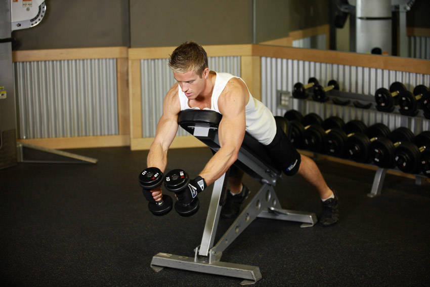
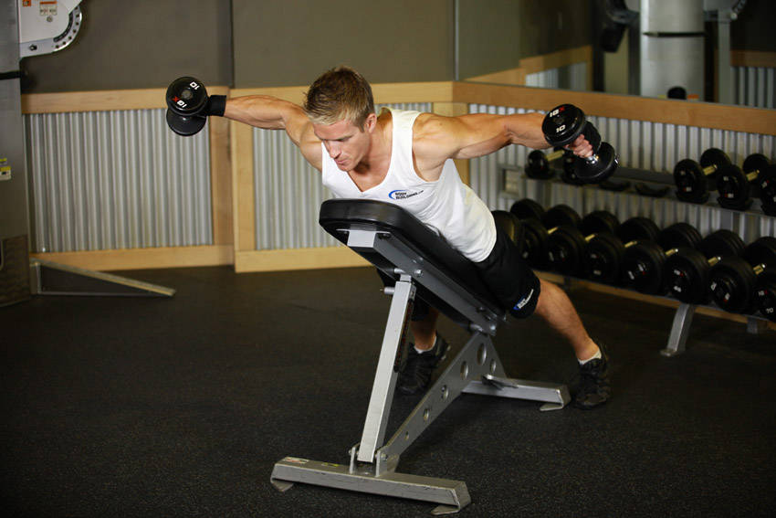
- Para começar, deite-se de bruços em um banco inclinado, com o peito e o abdômen apoiados no encosto. Segure um halter em cada mão com as palmas voltadas uma para a outra (pegada neutra).
- Estenda os braços à sua frente, perpendiculares ao ângulo do banco. As pernas devem permanecer imóveis, com a ponta dos pés pressionando o chão. Esta é a posição inicial.
- Mantendo uma leve flexão nos cotovelos, abra os halteres para os lados em um movimento em arco enquanto solta o ar. Dica: aperte as escápulas uma contra a outra para obter o máximo do exercício.
- Eleve os braços até que fiquem paralelos ao chão.
- Sinta a contração e desça os halteres lentamente de volta à posição inicial enquanto inspira.
- Repita pelo número recomendado de repetições.
Aponte a câmera
para ver vídeos
Desenvolvimento Arnold
Arnold Dumbbell Press
OmbrosHalteresIntermediárioCompostoAuxiliares: Tríceps
- Sente-se em um banco com encosto e segure dois halteres à frente do corpo, na altura da parte superior do peito, com as palmas voltadas para você e os cotovelos flexionados. Dica: os braços devem ficar junto ao tronco. A posição inicial deve parecer a fase final de uma rosca direta com halteres.
- Para executar o movimento, eleve os halteres enquanto gira as palmas das mãos até que fiquem voltadas para a frente.
- Continue subindo os halteres até que os braços fiquem estendidos acima da cabeça. Solte o ar durante essa fase do movimento.
- Após uma pausa de um segundo no topo, comece a descer os halteres à posição inicial girando as palmas das mãos de volta em sua direção. Dica: o braço esquerdo gira no sentido anti-horário e o direito, no sentido horário. Inspire durante essa fase do movimento.
- Repita pelo número recomendado de repetições.
Aponte a câmera
para ver vídeos
Desenvolvimento Militar em Pé
Standing Military Press
OmbrosBarraInicianteCompostoAuxiliares: Tríceps
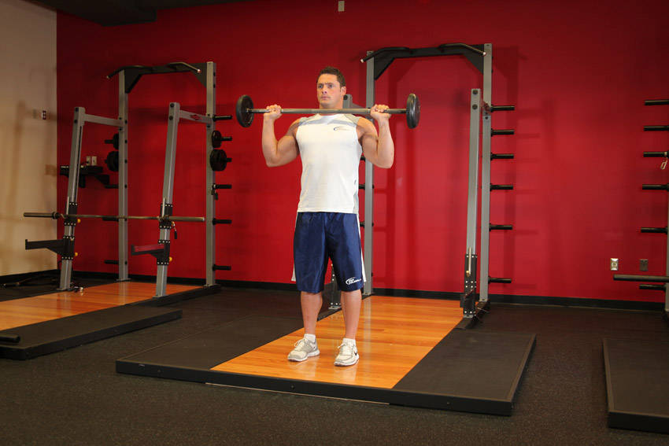
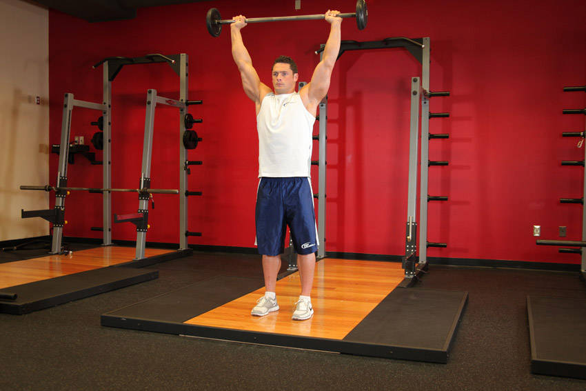
- Comece posicionando a barra no suporte do rack, aproximadamente na altura do peito. Depois de escolher a carga, segure a barra com pegada pronada (palmas voltadas para a frente), com as mãos mais afastadas que a largura dos ombros.
- Flexione levemente os joelhos e apoie a barra na altura das clavículas. Retire a barra do suporte mantendo-a apoiada sobre o peito. Dê um passo para trás e posicione os pés na largura dos ombros.
- Com a barra na pegada correta, empurre-a acima da cabeça até estender completamente os braços. Ao descer, mantenha a barra na altura dos ombros e ligeiramente à frente da cabeça. Esta é a posição inicial.
- Desça a barra lentamente até a altura das clavículas enquanto inspira.
- Empurre a barra de volta à posição inicial enquanto solta o ar.
- Repita pelo número recomendado de repetições.
Aponte a câmera
para ver vídeos
Desenvolvimento com Barra Sentado
Seated Barbell Military Press
OmbrosBarraIntermediárioCompostoAuxiliares: Tríceps
- Sente-se em um banco de desenvolvimento com a barra atrás da cabeça e peça a um parceiro que entregue a barra (é mais seguro para o manguito rotador) ou retire-a do suporte com cuidado, usando pegada pronada (palmas voltadas para a frente). Dica: a pegada deve ser mais aberta que a largura dos ombros, de modo a formar um ângulo de 90 graus entre o antebraço e o braço quando a barra desce.
- Com a pegada na largura correta, empurre a barra acima da cabeça até estender os braços. Segure-a aproximadamente na altura dos ombros e levemente à frente da cabeça. Esta é a posição inicial.
- Desça a barra lentamente até a altura das clavículas enquanto inspira.
- Empurre a barra de volta à posição inicial enquanto expira.
- Repita pelo número recomendado de repetições.
Aponte a câmera
para ver vídeos
Desenvolvimento com Halteres
Dumbbell Shoulder Press
OmbrosHalteresIntermediárioCompostoAuxiliares: Tríceps
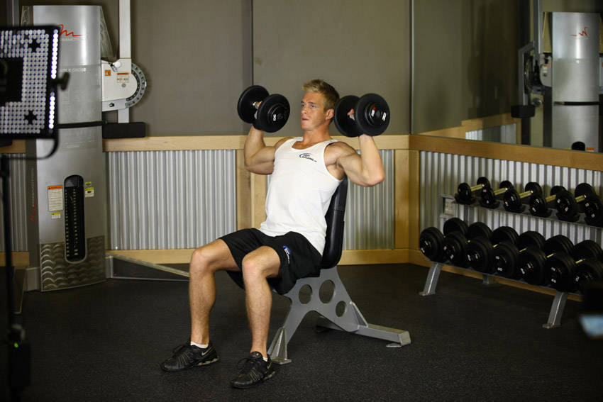
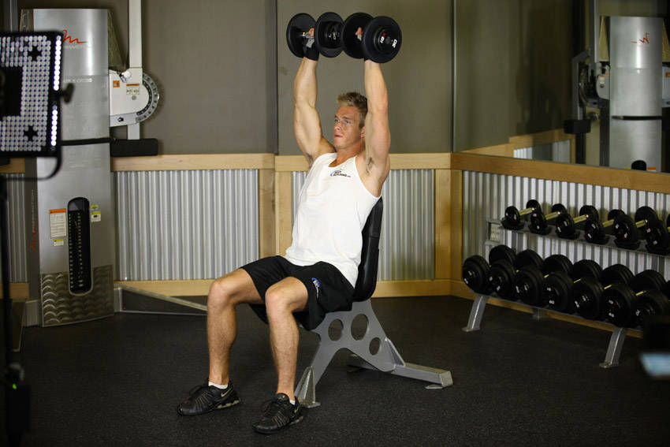
- Segurando um halter em cada mão, sente-se em um banco de desenvolvimento ou banco com encosto. Apoie os halteres na vertical sobre as coxas.
- Eleve os halteres até a altura dos ombros, um de cada vez, usando o impulso das coxas para ajudar a posicioná-los.
- Gire os punhos de modo que as palmas das mãos fiquem voltadas para a frente. Esta é a posição inicial.
- Expire e empurre os halteres para cima até que se encostem no topo do movimento.
- Após uma breve pausa na posição de contração máxima, desça os halteres lentamente de volta à posição inicial enquanto inspira.
- Repita pelo número recomendado de repetições.
Aponte a câmera
para ver vídeos
Desenvolvimento com Halteres Sentado
Seated Dumbbell Press
OmbrosHalteresInicianteCompostoAuxiliares: Tríceps

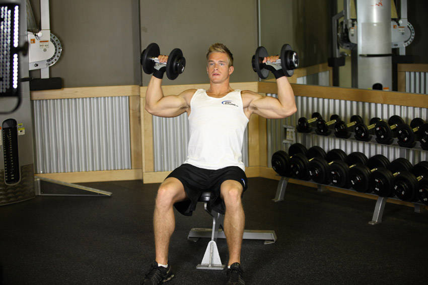
- Pegue um par de halteres e sente-se em um banco de desenvolvimento ou banco com encosto, apoiando os halteres na vertical sobre as coxas.
- Suba os halteres até a altura dos ombros, um de cada vez, usando o impulso das coxas para posicioná-los ao lado da cabeça.
- Gire os punhos de modo que as palmas das mãos fiquem voltadas para a frente. Esta é a posição inicial.
- Enquanto expira, empurre os halteres para cima até que se encostem no topo do movimento.
- Após uma pausa de um segundo, desça lentamente de volta à posição inicial enquanto inspira.
- Repita pelo número recomendado de repetições.
Aponte a câmera
para ver vídeos
Desenvolvimento com Halteres em Pé
Standing Dumbbell Press
OmbrosHalteresInicianteCompostoAuxiliares: Tríceps
- Em pé, com os pés na largura dos ombros, segure um halter em cada mão. Eleve os halteres até a altura da cabeça, com os cotovelos abertos e flexionados em cerca de 90 graus. Esta é a posição inicial.
- Mantendo a técnica rigorosa, sem impulso das pernas nem inclinação do tronco para trás, estenda os cotovelos e empurre os halteres juntos diretamente acima da cabeça.
- Faça uma pausa e retorne lentamente à posição inicial.
Aponte a câmera
para ver vídeos
Desenvolvimento com Impulso (push press)
Push Press
OmbrosBarraAvançadoCompostoAuxiliares: Quadríceps, Tríceps
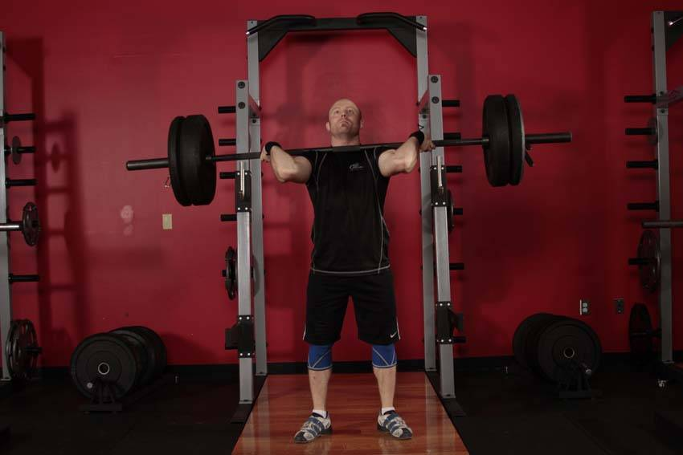
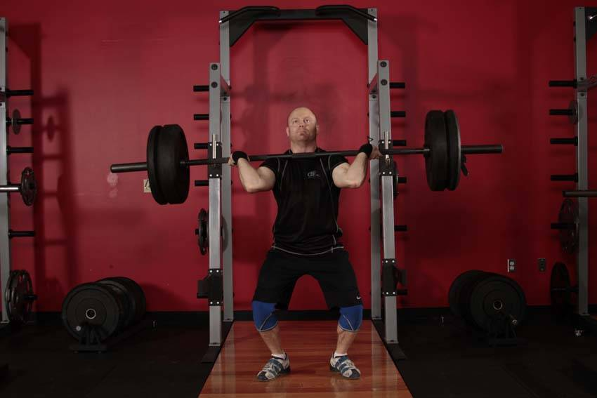
- Em pé, segure a barra na altura dos ombros com pegada pronada, cotovelos levemente à frente da barra e pés na largura dos ombros.
- Contraia o abdômen e mantenha o tronco ereto. Flexione levemente os joelhos e o quadril, descendo alguns centímetros em um movimento rápido e controlado.
- Estenda joelhos e quadril com força e use esse impulso para empurrar a barra verticalmente acima da cabeça, até a extensão completa dos cotovelos.
- Estabilize a barra no topo por um instante, com a cabeça levemente à frente e os braços alinhados às orelhas.
- Retorne a barra de forma controlada à altura dos ombros, absorvendo o impacto com uma leve flexão dos joelhos. Repita o número de repetições desejado.
Aponte a câmera
para ver vídeos
Desenvolvimento na Máquina
Machine Shoulder (Military) Press
OmbrosMáquinaInicianteCompostoAuxiliares: Tríceps
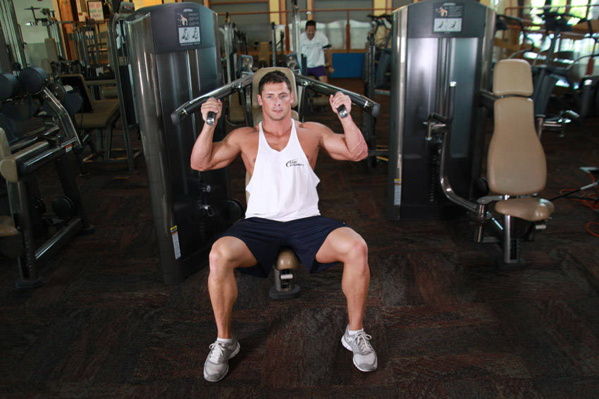
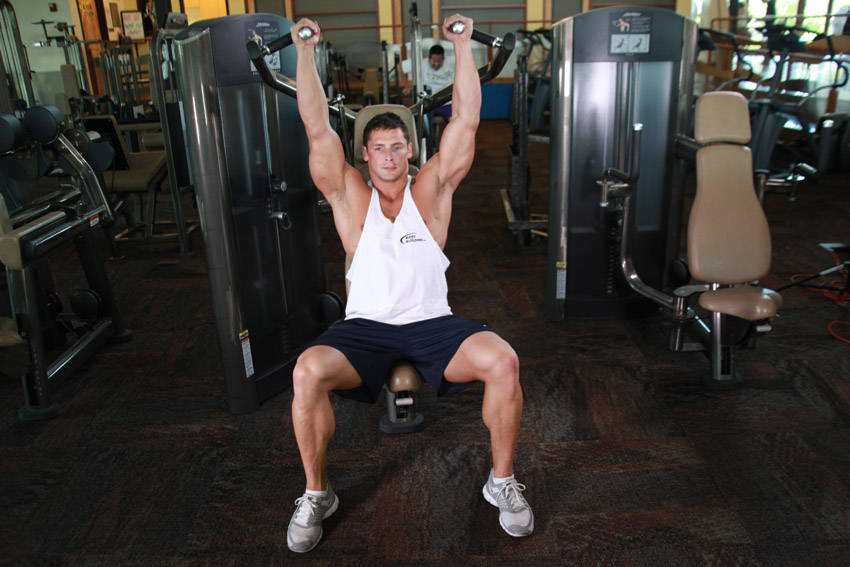
- Sente-se na máquina de desenvolvimento e selecione a carga.
- Segure as manoplas ao lado do corpo, mantendo os cotovelos flexionados e alinhados com o tronco. Esta é a posição inicial.
- Empurre as manoplas para cima enquanto expira, até estender completamente os braços. No topo do movimento, mantenha a contração por um segundo.
- Desça as manoplas lentamente de volta à posição inicial enquanto inspira.
- Repita pelo número recomendado de repetições.
Aponte a câmera
para ver vídeos
Elevação Frontal com Halteres
Front Dumbbell Raise
OmbrosHalteresInicianteIsolado
- Pegue um par de halteres e fique em pé com o tronco ereto, segurando os halteres à frente das coxas com os braços estendidos e as palmas das mãos voltadas para as coxas. Esta é a posição inicial.
- Mantendo o tronco imóvel (sem balanço), eleve o halter esquerdo à frente do corpo, com uma leve flexão do cotovelo e as palmas sempre voltadas para baixo. Suba até que o braço fique um pouco acima da linha paralela ao chão. Expire durante essa fase do movimento e faça uma pausa de um segundo no topo. Inspire após a pausa.
- Desça o halter lentamente de volta à posição inicial enquanto eleva simultaneamente o halter direito.
- Continue alternando dessa forma até completar o número recomendado de repetições para cada braço.
Aponte a câmera
para ver vídeos
Elevação Lateral
Side Lateral Raise
OmbrosHalteresInicianteIsolado
- Pegue um par de halteres e fique em pé com o tronco ereto, segurando os halteres ao lado do corpo com os braços estendidos e as palmas voltadas para você. Esta é a posição inicial.
- Mantendo o tronco imóvel (sem balanço), eleve os halteres lateralmente com uma leve flexão dos cotovelos e as mãos ligeiramente inclinadas para a frente, como se estivesse despejando água de uma jarra. Suba até que os braços fiquem paralelos ao chão. Expire durante o movimento e faça uma pausa de um segundo no topo.
- Desça os halteres lentamente de volta à posição inicial enquanto inspira.
- Repita pelo número recomendado de repetições.
Aponte a câmera
para ver vídeos
Elevação Lateral no Cabo (sentado)
Cable Seated Lateral Raise
OmbrosCabo/PoliaInicianteIsoladoAuxiliares: Meio das costas, Trapézio

- Posicione-se entre duas polias baixas opostas entre si e coloque um banco reto logo atrás de você (perpendicular ao seu corpo, com a extremidade estreita voltada para você). Selecione a carga em cada polia.
- Sente-se na beirada do banco com os pés posicionados à frente dos joelhos.
- Incline o tronco para a frente, mantendo as costas retas, e apoie o tronco sobre as coxas.
- Peça a alguém que entregue os puxadores individuais presos às polias. Segure a polia da esquerda com a mão direita e a da direita com a mão esquerda. Os cabos devem passar por baixo dos joelhos, com os braços estendidos, as palmas voltadas uma para a outra e uma leve flexão dos cotovelos. Esta é a posição inicial.
- Mantendo os braços firmes, eleve-os lateralmente até que fiquem paralelos ao chão, na altura dos ombros. Expire durante o movimento e mantenha a contração por um segundo.
- Desça os braços lentamente até a posição inicial enquanto inspira.
- Repita pelo número recomendado de repetições. Dica: mantenha os braços perpendiculares ao tronco e os cotovelos em ângulo fixo (entre 10 e 30 graus) durante todo o exercício.
Aponte a câmera
para ver vídeos
Face Pull (puxada para o rosto)
Face Pull
OmbrosCabo/PoliaIntermediárioCompostoAuxiliares: Meio das costas
- De frente para uma polia alta com corda ou puxadores duplos acoplados, puxe a carga diretamente em direção ao rosto, afastando as mãos durante o movimento. Mantenha os braços paralelos ao chão.
Aponte a câmera
para ver vídeos
Remada Alta com Barra
Upright Barbell Row
OmbrosBarraInicianteCompostoAuxiliares: Trapézio
- Segure a barra com pegada pronada, um pouco mais fechada que a largura dos ombros. A barra deve ficar apoiada à frente das coxas, com os braços estendidos e uma leve flexão dos cotovelos. Mantenha as costas retas. Esta é a posição inicial.
- Expire e use a parte lateral dos ombros para puxar a barra, elevando os cotovelos para cima e para os lados. Mantenha a barra próxima ao corpo durante a subida. Continue puxando até que a barra quase toque o queixo. Dica: os cotovelos devem conduzir o movimento e permanecer sempre acima dos antebraços. Mantenha o tronco imóvel e faça uma pausa de um segundo no topo.
- Desça a barra lentamente de volta à posição inicial, inspirando durante essa fase do movimento.
- Repita pelo número recomendado de repetições.
Aponte a câmera
para ver vídeos
04
Bíceps
12 exercícios neste capítulo. Cada ficha traz músculo alvo, equipamento,
nível, fotos da posição inicial e final, execução passo a passo e QR code com vídeos.
- Rosca Alternada com Halteres
- Rosca Concentrada
- Rosca Direta com Barra
- Rosca Direta com Barra W
- Rosca Direta com Halteres
- Rosca Inclinada com Halteres
- Rosca Martelo
- Rosca Martelo no Cabo (corda)
- Rosca Scott (banco preacher)
- Rosca Zottman
- Rosca na Máquina
- Rosca no Cabo em Pé
Rosca Alternada com Halteres
Dumbbell Alternate Bicep Curl
BícepsHalteresInicianteIsoladoAuxiliares: Antebraços
- Fique em pé com o tronco ereto, segurando um halter em cada mão com os braços estendidos. Mantenha os cotovelos junto ao tronco e as palmas das mãos voltadas para as coxas.
- Mantendo o braço imóvel, flexione o cotovelo direito e gire a palma da mão até que fique voltada para cima. Continue contraindo o bíceps enquanto expira, até que ele esteja totalmente contraído e o halter na altura do ombro. Mantenha a posição de contração por um segundo, apertando bem o bíceps. Dica: apenas o antebraço deve se mover.
- Desça o halter lentamente de volta à posição inicial enquanto inspira. Dica: lembre-se de girar a palma de volta à posição inicial (voltada para a coxa) durante a descida.
- Repita o movimento com o braço esquerdo. Isso completa uma repetição.
- Continue alternando dessa forma pelo número recomendado de repetições.
Aponte a câmera
para ver vídeos
Rosca Concentrada
Concentration Curls
BícepsHalteresInicianteIsoladoAuxiliares: Antebraços
- Sente-se em um banco reto com um halter no chão entre as pernas. Afaste as pernas, com os joelhos flexionados e os pés apoiados no chão.
- Pegue o halter com a mão direita e apoie a parte posterior do braço direito na face interna da coxa direita. Gire a palma da mão até que fique voltada para a frente, afastada da coxa. Dica: o braço deve estar estendido e o halter suspenso, sem tocar o chão. Esta é a posição inicial.
- Mantendo o braço imóvel, flexione o cotovelo contraindo o bíceps enquanto expira. Apenas o antebraço deve se mover. Continue o movimento até que o bíceps esteja totalmente contraído e o halter na altura do ombro. Dica: no topo do movimento, o dedo mínimo deve ficar mais alto que o polegar — isso garante uma boa contração. Mantenha a posição de contração por um segundo, apertando bem o bíceps.
- Desça o halter lentamente de volta à posição inicial enquanto inspira. Atenção: evite qualquer movimento de balanço.
- Repita pelo número recomendado de repetições e, em seguida, execute o movimento com o braço esquerdo.
Aponte a câmera
para ver vídeos
Rosca Direta com Barra
Barbell Curl
BícepsBarraInicianteIsoladoAuxiliares: Antebraços
- Fique em pé com o tronco ereto, segurando a barra com pegada supinada na largura dos ombros. As palmas das mãos devem ficar voltadas para a frente e os cotovelos junto ao tronco. Esta é a posição inicial.
- Mantendo os braços imóveis, flexione os cotovelos contraindo o bíceps enquanto expira. Dica: apenas os antebraços devem se mover.
- Continue o movimento até que os bíceps estejam totalmente contraídos e a barra na altura dos ombros. Mantenha a posição de contração por um segundo, apertando bem os bíceps.
- Desça a barra lentamente de volta à posição inicial enquanto inspira.
- Repita pelo número recomendado de repetições.
Aponte a câmera
para ver vídeos
Rosca Direta com Barra W
EZ-Bar Curl
BícepsBarra WInicianteIsolado
- Fique em pé, com o tronco ereto, segurando a barra W pela parte externa das empunhaduras. As palmas das mãos devem ficar voltadas para a frente e levemente inclinadas para dentro, devido ao formato da barra. Mantenha os cotovelos junto ao tronco. Esta é a posição inicial.
- Mantendo os braços imóveis, expire e flexione os cotovelos contraindo os bíceps. Concentre-se em mover apenas os antebraços.
- Continue subindo a carga até que os bíceps estejam totalmente contraídos e a barra na altura dos ombros. Mantenha a posição de contração por um instante, apertando bem os bíceps.
- Em seguida, inspire e desça a barra lentamente de volta à posição inicial.
- Repita pelo número recomendado de repetições.
Aponte a câmera
para ver vídeos
Rosca Direta com Halteres
Dumbbell Bicep Curl
BícepsHalteresInicianteIsoladoAuxiliares: Antebraços
- Fique em pé, com o tronco ereto, segurando um halter em cada mão com os braços estendidos. Mantenha os cotovelos junto ao tronco e gire as palmas das mãos até que fiquem voltadas para a frente. Esta é a posição inicial.
- Mantendo os braços imóveis, expire e flexione os cotovelos contraindo os bíceps. Continue subindo os halteres até que os bíceps estejam totalmente contraídos e os halteres na altura dos ombros. Mantenha a posição de contração por uma breve pausa, apertando bem os bíceps.
- Em seguida, inspire e desça os halteres lentamente de volta à posição inicial.
- Repita pelo número recomendado de repetições.
Aponte a câmera
para ver vídeos
Rosca Inclinada com Halteres
Incline Dumbbell Curl
BícepsHalteresInicianteIsolado
- Sente-se em um banco inclinado, recostado, segurando um halter em cada mão com os braços estendidos. Mantenha os cotovelos junto ao tronco e gire as palmas das mãos até que fiquem voltadas para a frente. Esta é a posição inicial.
- Mantendo os braços imóveis, flexione os cotovelos contraindo os bíceps enquanto expira. Apenas os antebraços devem se mover. Continue o movimento até que os bíceps estejam totalmente contraídos e os halteres na altura dos ombros. Mantenha a posição de contração por um segundo.
- Desça os halteres lentamente de volta à posição inicial enquanto inspira.
- Repita pelo número recomendado de repetições.
Aponte a câmera
para ver vídeos
Rosca Martelo
Hammer Curls
BícepsHalteresInicianteIsolado
- Fique em pé com o tronco ereto, segurando um halter em cada mão com os braços estendidos. Mantenha os cotovelos junto ao tronco.
- As palmas das mãos devem ficar voltadas para o tronco (pegada neutra). Esta é a posição inicial.
- Mantendo o braço imóvel, expire e flexione o cotovelo contraindo o bíceps. Continue subindo o halter até que o bíceps esteja totalmente contraído e o halter na altura do ombro. Mantenha a posição de contração por um instante, apertando bem o bíceps. Dica: concentre-se em manter o cotovelo fixo e mover apenas o antebraço.
- Após a breve pausa, inspire e desça os halteres lentamente de volta à posição inicial.
- Repita pelo número recomendado de repetições.
Aponte a câmera
para ver vídeos
Rosca Martelo no Cabo (corda)
Cable Hammer Curls - Rope Attachment
BícepsCabo/PoliaInicianteIsolado
- Acople uma corda à polia baixa e fique em pé, de frente para a máquina, a cerca de 30 centímetros dela.
- Segure a corda com pegada neutra (palmas voltadas uma para a outra) e fique ereto, mantendo a curvatura natural das costas e o tronco imóvel.
- Mantenha os cotovelos junto ao corpo, fixos nessa posição durante todo o movimento. Dica: apenas os antebraços devem se mover, não os braços. Esta é a posição inicial.
- Usando os bíceps, puxe a corda para cima enquanto expira, até que os bíceps encostem nos antebraços. Dica: lembre-se de manter os cotovelos junto ao corpo e os braços imóveis.
- Após uma contração de um segundo, apertando bem os bíceps, retorne a carga lentamente à posição inicial.
- Repita pelo número recomendado de repetições.
Aponte a câmera
para ver vídeos
Rosca Scott (banco preacher)
Preacher Curl
BícepsBarraInicianteIsolado
- Para realizar este exercício, você vai precisar de um banco Scott e uma barra W (EZ). Segure a barra W pela empunhadura interna mais fechada (de preferência, peça para alguém entregar a barra ou pegue-a no apoio frontal que a maioria dos bancos Scott possui). As palmas das mãos devem estar voltadas para a frente, levemente inclinadas para dentro devido ao formato da barra.
- Com a parte de trás dos braços apoiada na almofada do banco Scott e o peito encostado nela, segure a barra W na altura dos ombros. Esta será a posição inicial.
- Inspirando, desça a barra lentamente até que os braços fiquem estendidos e o bíceps totalmente alongado.
- Expirando, use o bíceps para levantar o peso até que o músculo esteja totalmente contraído e a barra na altura dos ombros. Contraia o bíceps com força e mantenha essa posição por um segundo.
- Repita pelo número de repetições recomendado.
Aponte a câmera
para ver vídeos
Rosca Zottman
Zottman Curl
BícepsHalteresIntermediárioIsoladoAuxiliares: Antebraços
- Fique em pé com o tronco ereto, segurando um halter em cada mão com os braços estendidos ao lado do corpo. Os cotovelos devem ficar próximos ao tronco.
- Certifique-se de que as palmas das mãos estejam voltadas uma para a outra. Esta será a posição inicial.
- Mantendo a parte de trás dos braços imóvel, levante os halteres contraindo o bíceps enquanto expira. Apenas os antebraços devem se mover. Gire os punhos durante a subida para assumir uma pegada supinada (palmas para cima). Continue o movimento até que o bíceps esteja totalmente contraído e os halteres na altura dos ombros.
- Mantenha a posição de contração por um segundo, apertando bem o bíceps.
- Ainda na posição de contração, gire os punhos até assumir uma pegada pronada (palmas para baixo), com o polegar mais alto que o dedo mínimo.
- Comece a descer os halteres lentamente mantendo a pegada pronada.
- Quando os halteres se aproximarem das coxas, gire os punhos de volta para a pegada neutra (palmas voltadas para o corpo).
- Repita pelo número de repetições recomendado.
Aponte a câmera
para ver vídeos
Rosca na Máquina
Machine Bicep Curl
BícepsMáquinaInicianteIsolado
- Ajuste o banco na altura adequada e selecione a carga. Apoie a parte de trás dos braços nas almofadas e segure as manoplas. Esta será a posição inicial.
- Execute o movimento flexionando os cotovelos, trazendo os antebraços em direção aos braços.
- Faça uma pausa no ponto máximo do movimento e, em seguida, retorne o peso lentamente à posição inicial.
- Evite deixar o peso encostar totalmente no apoio antes do fim da série, para manter a tensão nos músculos trabalhados.
Aponte a câmera
para ver vídeos
Rosca no Cabo em Pé
Standing Biceps Cable Curl
BícepsCabo/PoliaInicianteIsolado
- Fique em pé com o tronco ereto, segurando uma barra de rosca presa à polia baixa. Segure a barra na largura dos ombros e mantenha os cotovelos próximos ao tronco. As palmas das mãos devem estar voltadas para cima (pegada supinada). Esta será a posição inicial.
- Mantendo a parte de trás dos braços imóvel, levante a barra contraindo o bíceps enquanto expira. Apenas os antebraços devem se mover. Continue o movimento até que o bíceps esteja totalmente contraído e a barra na altura dos ombros. Mantenha a posição de contração por um segundo, apertando bem o músculo.
- Desça a barra lentamente de volta à posição inicial enquanto inspira.
- Repita pelo número de repetições recomendado.
Aponte a câmera
para ver vídeos
05
Tríceps
12 exercícios neste capítulo. Cada ficha traz músculo alvo, equipamento,
nível, fotos da posição inicial e final, execução passo a passo e QR code com vídeos.
- Flexão com Pegada Fechada (diamante)
- Mergulho nas Paralelas (ênfase no tríceps)
- Mergulho no Banco
- Supino com Pegada Fechada
- Tríceps Coice com Halter
- Tríceps Francês com Halter
- Tríceps Francês no Cabo (corda)
- Tríceps Testa com Barra W
- Tríceps Testa com Halteres
- Tríceps na Máquina
- Tríceps na Polia (barra reta)
- Tríceps na Polia com Corda
Flexão com Pegada Fechada (diamante)
Push-Ups - Close Triceps Position
TrícepsPeso corporalIntermediárioCompostoAuxiliares: Peitoral, Ombros
- Deite-se no chão de bruços e posicione as mãos a uma distância menor que a largura dos ombros, formando uma pegada fechada. Sustente o tronco com os braços estendidos.
- Desça o corpo até que o peito quase toque o chão, inspirando durante a descida.
- Usando o tríceps e parte do peitoral, empurre o corpo de volta à posição inicial e contraia o peito. Expire durante esta fase do movimento.
- Após uma pausa de um segundo na posição de contração, repita o movimento pelo número de repetições prescrito.
Aponte a câmera
para ver vídeos
Mergulho nas Paralelas (ênfase no tríceps)
Dips - Triceps Version
TrícepsPeso corporalInicianteCompostoAuxiliares: Peitoral, Ombros
- Para assumir a posição inicial, sustente o corpo sobre as barras paralelas com os braços estendidos e os cotovelos quase travados.
- Inspire e desça o corpo lentamente. O tronco deve permanecer ereto e os cotovelos junto ao corpo — isso ajuda a concentrar o trabalho no tríceps. Desça até formar um ângulo de 90 graus entre o braço e o antebraço.
- Em seguida, expire e empurre o corpo para cima usando o tríceps, retornando à posição inicial.
- Repita o movimento pelo número de repetições prescrito.
Aponte a câmera
para ver vídeos
Mergulho no Banco
Bench Dips
TrícepsPeso corporalInicianteCompostoAuxiliares: Peitoral, Ombros
- Para este exercício, posicione um banco atrás do corpo. Com o banco perpendicular ao seu corpo e de costas para ele, apoie as mãos na borda do banco com os braços totalmente estendidos e afastados na largura dos ombros. As pernas ficam estendidas à frente, com o quadril flexionado, perpendiculares ao tronco. Esta será a posição inicial.
- Desça o corpo lentamente enquanto inspira, flexionando os cotovelos até formar um ângulo um pouco menor que 90 graus entre o braço e o antebraço. Dica: mantenha os cotovelos o mais próximos possível do corpo durante todo o movimento. Os antebraços devem apontar sempre para baixo.
- Usando o tríceps para elevar o tronco, empurre o corpo de volta à posição inicial.
- Repita pelo número de repetições recomendado.
Aponte a câmera
para ver vídeos
Supino com Pegada Fechada
Close-Grip Barbell Bench Press
TrícepsBarraInicianteCompostoAuxiliares: Peitoral, Ombros
- Deite-se em um banco reto. Com uma pegada fechada (aproximadamente na largura dos ombros), retire a barra do suporte e segure-a acima do peito com os braços estendidos. Esta será a posição inicial.
- Inspirando, desça a barra lentamente até senti-la tocar o meio do peito. Dica: diferentemente do supino tradicional, mantenha os cotovelos junto ao tronco durante todo o movimento para maximizar o trabalho do tríceps.
- Após uma pausa de um segundo, expire e empurre a barra de volta à posição inicial usando o tríceps. Estenda os braços na posição de contração, segure por um segundo e comece a descer lentamente de novo. Dica: a descida deve levar pelo menos o dobro do tempo da subida.
- Repita o movimento pelo número de repetições prescrito.
- Ao terminar, recoloque a barra no suporte.
Aponte a câmera
para ver vídeos
Tríceps Coice com Halter
Tricep Dumbbell Kickback
TrícepsHalteresInicianteIsolado
- Comece com um halter em cada mão e as palmas voltadas para o tronco. Mantenha as costas retas, os joelhos levemente flexionados e incline o tronco à frente a partir do quadril, até que fique quase paralelo ao chão. Mantenha a cabeça erguida. A parte de trás dos braços deve ficar junto ao tronco e paralela ao chão, com os antebraços apontando para baixo segurando os halteres, formando um ângulo de 90 graus entre braço e antebraço. Esta é a posição inicial.
- Mantendo a parte de trás dos braços imóvel, expire e use o tríceps para levar o peso para trás até estender completamente o braço. Concentre-se em mover apenas o antebraço.
- Após uma breve pausa no ponto máximo de contração, inspire e desça os halteres lentamente de volta à posição inicial.
- Repita o movimento pelo número de repetições prescrito.
Aponte a câmera
para ver vídeos
Tríceps Francês com Halter
Standing Dumbbell Triceps Extension
TrícepsHalteresInicianteIsolado
- Para começar, fique em pé segurando um halter com as duas mãos, com os pés afastados aproximadamente na largura dos ombros. Com as duas mãos, eleve o halter lentamente acima da cabeça até que os braços fiquem totalmente estendidos.
- O peso deve ficar apoiado nas palmas das mãos, com os polegares ao redor do cabo. As palmas devem estar voltadas para cima, em direção ao teto. Esta será a posição inicial.
- Mantendo a parte de trás dos braços junto à cabeça, com os cotovelos fechados e perpendiculares ao chão, desça o peso em um movimento semicircular atrás da cabeça até que os antebraços toquem o bíceps. Dica: a parte de trás dos braços deve permanecer imóvel; apenas os antebraços se movem. Inspire durante esta fase.
- Retorne à posição inicial usando o tríceps para elevar o halter. Expire durante esta fase.
- Repita pelo número de repetições recomendado.
Aponte a câmera
para ver vídeos
Tríceps Francês no Cabo (corda)
Cable Rope Overhead Triceps Extension
TrícepsCabo/PoliaInicianteIsolado
- Prenda a corda na polia baixa da máquina.
- Segurando a corda com as duas mãos em pegada neutra (palmas voltadas uma para a outra), estenda os braços com as mãos diretamente acima da cabeça. Os cotovelos devem ficar próximos à cabeça e os braços perpendiculares ao chão, com os nós dos dedos apontando para o teto. Esta será a posição inicial.
- Desça a corda lentamente atrás da cabeça, mantendo a parte de trás dos braços imóvel. Inspire durante o movimento e faça uma pausa quando o tríceps estiver totalmente alongado.
- Retorne à posição inicial contraindo o tríceps enquanto expira.
- Repita pelo número de repetições recomendado.
Aponte a câmera
para ver vídeos
Tríceps Testa com Barra W
EZ-Bar Skullcrusher
TrícepsBarra WInicianteIsoladoAuxiliares: Antebraços
- Deitado no banco, segure a barra W com pegada fechada e os cotovelos fechados, com os braços perpendiculares ao chão. Esta será a posição inicial.
- Mantendo a parte de trás dos braços imóvel, desça a barra flexionando os cotovelos. Inspire durante esta fase do movimento. Faça uma pausa quando a barra estiver diretamente acima da testa.
- Retorne a barra à posição inicial estendendo os cotovelos enquanto expira.
- Repita.
Aponte a câmera
para ver vídeos
Tríceps Testa com Halteres
Lying Dumbbell Tricep Extension
TrícepsHalteresIntermediárioIsoladoAuxiliares: Peitoral, Ombros
- Deite-se em um banco reto segurando dois halteres diretamente acima do corpo. Os braços devem estar totalmente estendidos, formando um ângulo de 90 graus com o tronco e o chão. As palmas devem estar voltadas uma para a outra e os cotovelos fechados. Esta é a posição inicial.
- Inspirando e mantendo a parte de trás dos braços imóvel, com os cotovelos fechados, desça o peso lentamente até que os halteres fiquem próximos às orelhas.
- Nesse ponto, mantendo os cotovelos fechados e a parte de trás dos braços imóvel, use o tríceps para retornar o peso à posição inicial enquanto expira.
- Repita pelo número de repetições recomendado.
Aponte a câmera
para ver vídeos
Tríceps na Máquina
Machine Triceps Extension
TrícepsMáquinaInicianteIsolado
- Ajuste o banco na altura adequada e selecione a carga. Apoie a parte de trás dos braços nas almofadas e segure as manoplas. Esta será a posição inicial.
- Execute o movimento estendendo os cotovelos, afastando os antebraços dos braços.
- Faça uma pausa ao completar o movimento e, em seguida, retorne o peso lentamente à posição inicial.
- Evite deixar o peso encostar totalmente no apoio antes do fim da série, para manter a tensão nos músculos trabalhados.
Aponte a câmera
para ver vídeos
Tríceps na Polia (barra reta)
Triceps Pushdown
TrícepsCabo/PoliaInicianteIsolado
- Prenda uma barra reta ou angulada na polia alta e segure-a com pegada pronada (palmas para baixo), na largura dos ombros.
- Em pé, com o tronco ereto e uma inclinação bem leve à frente, mantenha a parte de trás dos braços junto ao corpo e perpendicular ao chão. Os antebraços devem apontar para cima, em direção à polia, segurando a barra. Esta é a posição inicial.
- Usando o tríceps, empurre a barra para baixo até que ela toque a parte da frente das coxas e os braços fiquem totalmente estendidos, perpendiculares ao chão. A parte de trás dos braços deve permanecer imóvel junto ao tronco; apenas os antebraços se movem. Expire durante o movimento.
- Após segurar por um segundo na posição de contração, retorne a barra lentamente ao ponto inicial. Inspire durante esta fase.
- Repita pelo número de repetições recomendado.
Aponte a câmera
para ver vídeos
Tríceps na Polia com Corda
Triceps Pushdown - Rope Attachment
TrícepsCabo/PoliaInicianteIsolado
- Prenda a corda na polia alta e segure-a com pegada neutra (palmas voltadas uma para a outra).
- Em pé, com o tronco ereto e uma inclinação bem leve à frente, mantenha a parte de trás dos braços junto ao corpo e perpendicular ao chão. Os antebraços devem apontar para cima, em direção à polia, segurando a corda com as palmas voltadas uma para a outra. Esta é a posição inicial.
- Usando o tríceps, empurre a corda para baixo, levando cada ponta da corda para o lado das coxas. Ao final do movimento, os braços ficam totalmente estendidos e perpendiculares ao chão. A parte de trás dos braços deve permanecer imóvel junto ao tronco; apenas os antebraços se movem. Expire durante o movimento.
- Após segurar por um segundo na posição de contração, retorne a corda lentamente ao ponto inicial. Inspire durante esta fase.
- Repita pelo número de repetições recomendado.
Aponte a câmera
para ver vídeos
06
Antebraço e Pegada
6 exercícios neste capítulo. Cada ficha traz músculo alvo, equipamento,
nível, fotos da posição inicial e final, execução passo a passo e QR code com vídeos.
- Caminhada do Fazendeiro
- Pinça de Anilhas
- Rolo de Punho
- Rosca de Punho Invertida (palmas para baixo)
- Rosca de Punho com Barra (palmas para cima)
- Rosca de Punho com Halter
Caminhada do Fazendeiro
Farmer's Walk
AntebraçosAcessóriosIntermediárioCompostoAuxiliares: Abdômen, Glúteos, Posteriores de coxa
- Diversos implementos podem ser usados na caminhada do fazendeiro. Se não estiverem disponíveis, o exercício também pode ser feito com halteres pesados ou barras curtas. Comece em pé, posicionado entre os implementos.
- Depois de segurar as alças, levante os pesos empurrando o chão com os calcanhares, mantendo as costas retas e a cabeça erguida.
- Caminhe com passos curtos e rápidos, sem esquecer de respirar. Percorra a distância determinada, geralmente de 15 a 30 metros, o mais rápido possível.
Aponte a câmera
para ver vídeos
Pinça de Anilhas
Plate Pinch
AntebraçosAcessóriosIntermediárioIsolado
- Pegue duas anilhas de borda larga e junte-as com os lados lisos voltados para fora.
- Use os dedos para segurar um lado das anilhas e o polegar do outro lado, mantendo as duas anilhas unidas. Esta é a posição inicial.
- Aperte as anilhas com os dedos e o polegar. Mantenha essa posição pelo máximo de tempo que conseguir.
- Repita pelo número de séries prescrito no seu programa.
- Troque de braço e repita o movimento.
Aponte a câmera
para ver vídeos
Rolo de Punho
Wrist Roller
AntebraçosAcessóriosInicianteIsoladoAuxiliares: Ombros
- Para começar, fique em pé segurando o rolo de punho com pegada pronada (palmas para baixo). Os pés devem estar afastados na largura dos ombros.
- Eleve lentamente os dois braços até que fiquem totalmente estendidos à frente do corpo, paralelos ao chão. Observação: verifique se a corda não está enrolada no rolo. Todo o corpo deve permanecer imóvel, exceto os antebraços. Esta é a posição inicial.
- Gire um punho de cada vez, em movimento ascendente, enrolando a corda no rolo para elevar o peso até a barra.
- Quando o peso alcançar a barra, comece a descê-lo lentamente girando os punhos no sentido contrário, até que o peso retorne à posição inicial.
- Repita pelo número de repetições prescrito no seu programa.
Aponte a câmera
para ver vídeos
Rosca de Punho Invertida (palmas para baixo)
Palms-Down Wrist Curl Over A Bench
AntebraçosBarraInicianteIsolado
- Comece posicionando uma barra em um dos lados de um banco reto.
- Ajoelhe-se com os dois joelhos no chão, de frente para o banco.
- Segure a barra com pegada pronada (palmas para baixo) e apoie os antebraços sobre o banco, deixando os punhos para fora da borda.
- Flexione os punhos para cima, expirando durante o movimento.
- Desça lentamente os punhos de volta à posição inicial, inspirando.
- Os antebraços devem permanecer imóveis: o movimento deve acontecer apenas nos punhos.
- Repita pelo número recomendado de repetições.
Aponte a câmera
para ver vídeos
Rosca de Punho com Barra (palmas para cima)
Palms-Up Barbell Wrist Curl Over A Bench
AntebraçosBarraInicianteIsolado
- Comece posicionando uma barra em um dos lados de um banco reto.
- Ajoelhe-se com os dois joelhos no chão, de frente para o banco.
- Segure a barra com pegada supinada (palmas para cima) e apoie os antebraços sobre o banco, deixando os punhos para fora da borda.
- Flexione os punhos para cima, expirando durante o movimento.
- Desça lentamente os punhos de volta à posição inicial, inspirando.
- Os antebraços devem permanecer imóveis: o movimento deve acontecer apenas nos punhos.
- Repita pelo número recomendado de repetições.
Aponte a câmera
para ver vídeos
Rosca de Punho com Halter
Seated Dumbbell Palms-Up Wrist Curl
AntebraçosHalteresInicianteIsolado
- Comece posicionando dois halteres no chão, em frente a um banco reto.
- Sente-se na borda do banco com as pernas afastadas mais ou menos na largura dos ombros e mantenha os pés apoiados no chão.
- Pegue os dois halteres e apoie os antebraços sobre as coxas, com as palmas das mãos voltadas para cima e os punhos para fora dos joelhos.
- Flexione os punhos para cima, expirando durante o movimento.
- Desça lentamente os punhos de volta à posição inicial, inspirando nessa fase do exercício. Dica: os antebraços devem permanecer imóveis, pois o movimento deve acontecer apenas nos punhos.
- Repita pelo número recomendado de repetições.
- Ao terminar, simplesmente apoie os halteres de volta no chão.
Aponte a câmera
para ver vídeos
07
Abdômen e Core
17 exercícios neste capítulo. Cada ficha traz músculo alvo, equipamento,
nível, fotos da posição inicial e final, execução passo a passo e QR code com vídeos.
- Abdominal 3/4
- Abdominal Completo (sit-up)
- Abdominal Crunch
- Abdominal Cruzado (oblíquo)
- Abdominal Invertido
- Abdominal Oblíquo
- Abdominal na Bola Suíça
- Abdominal no Banco Declinado
- Abdominal no Cabo (ajoelhado)
- Dead Bug (inseto morto)
- Elevação de Pernas na Barra
- Elevação de Pernas no Banco
- Pallof Press (anti-rotação)
- Prancha
- Prancha Lateral
- Roda Abdominal
- Rotação Russa (russian twist)
Abdominal 3/4
3/4 Sit-Up
AbdômenPeso corporalInicianteComposto
- Deite-se no chão e fixe os pés. As pernas devem ficar flexionadas nos joelhos.
- Coloque as mãos atrás ou ao lado da cabeça. Você começará com as costas apoiadas no chão. Essa é a posição inicial.
- Flexione o quadril e a coluna, elevando o tronco em direção aos joelhos.
- No topo da contração, o tronco deve ficar perpendicular ao chão. Volte de forma controlada, descendo apenas 3/4 do caminho.
- Repita pelo número recomendado de repetições.
Aponte a câmera
para ver vídeos
Abdominal Completo (sit-up)
Sit-Up
AbdômenPeso corporalInicianteIsolado
- Deite-se no chão e prenda os pés sob algo firme ou peça para um parceiro segurá-los. As pernas devem ficar flexionadas nos joelhos.
- Coloque as mãos atrás da cabeça e entrelace os dedos. Essa é a posição inicial.
- Eleve o tronco até formar um "V" imaginário com as coxas, expirando durante essa fase do exercício.
- Após sentir a contração por um segundo, desça o tronco de volta à posição inicial, inspirando.
- Repita pelo número recomendado de repetições.
Aponte a câmera
para ver vídeos
Abdominal Crunch
Crunches
AbdômenPeso corporalInicianteIsolado
- Deite-se de costas com os pés apoiados no chão ou sobre um banco, com os joelhos flexionados a 90 graus. Se apoiar os pés no banco, mantenha-os afastados cerca de 8 a 10 centímetros, com as pontas dos pés voltadas para dentro até se tocarem.
- Apoie as mãos levemente nas laterais da cabeça, mantendo os cotovelos apontados para fora, sem fechá-los. Dica: não entrelace os dedos atrás da cabeça.
- Pressionando a região lombar contra o chão para isolar melhor os músculos abdominais, comece a elevar os ombros do chão.
- Continue pressionando a lombar contra o chão com força enquanto contrai o abdômen e expira. Os ombros devem subir apenas cerca de 10 centímetros, com a lombar sempre apoiada no chão. No topo do movimento, contraia o abdômen com força e mantenha a contração por um segundo. Dica: execute o movimento de forma lenta e controlada — não se engane usando impulso.
- Após manter a contração por um segundo, desça lentamente de volta à posição inicial, inspirando.
- Repita pelo número recomendado de repetições.
Aponte a câmera
para ver vídeos
Abdominal Cruzado (oblíquo)
Cross-Body Crunch
AbdômenPeso corporalInicianteComposto
- Deite-se de costas e flexione os joelhos a cerca de 60 graus.
- Mantenha os pés apoiados no chão e coloque as mãos levemente atrás da cabeça. Essa é a posição inicial.
- Eleve o tronco levando o cotovelo e o ombro direitos em direção ao lado oposto do corpo, enquanto traz o joelho esquerdo em direção ao ombro esquerdo ao mesmo tempo. Tente encostar o cotovelo no joelho, expirando durante o movimento. Dica: procure levar o ombro em direção ao joelho, e não apenas o cotovelo — o segredo é contrair o abdômen durante o movimento, não apenas mover o braço.
- Volte à posição inicial inspirando e repita com o cotovelo esquerdo e o joelho direito.
- Continue alternando os lados até completar todas as repetições prescritas.
Aponte a câmera
para ver vídeos
Abdominal Invertido
Reverse Crunch
AbdômenPeso corporalInicianteIsolado
- Deite-se no chão com as pernas totalmente estendidas e os braços ao lado do corpo, com as palmas das mãos apoiadas no chão. Os braços devem permanecer imóveis durante todo o exercício.
- Eleve as pernas até que as coxas fiquem perpendiculares ao chão, com os pés unidos e paralelos ao chão. Essa é a posição inicial.
- Inspirando, traga as pernas em direção ao tronco, retrovertendo a pelve e elevando o quadril do chão. Ao final do movimento, os joelhos devem tocar o peito.
- Mantenha a contração por um segundo e volte com as pernas à posição inicial, expirando.
- Repita pelo número recomendado de repetições.
Aponte a câmera
para ver vídeos
Abdominal Oblíquo
Oblique Crunches
AbdômenPeso corporalInicianteIsolado
- Deite-se de costas no chão com a região lombar pressionada contra o solo. Neste exercício, coloque uma das mãos ao lado da cabeça e a outra apoiada no chão, ao lado do corpo.
- Mantenha os pés elevados e apoiados sobre uma superfície plana.
- Eleve o ombro do lado em que a mão está tocando a cabeça.
- Suba o ombro e o tronco até tocar o joelho oposto. Por exemplo: se a mão direita estiver ao lado da cabeça, eleve o tronco até o cotovelo direito tocar o joelho esquerdo. A mesma variação vale para o lado inverso, tocando o cotovelo esquerdo no joelho direito.
- Depois que o joelho tocar o cotovelo, desça o tronco até retornar à posição inicial.
- Lembre-se de inspirar na fase excêntrica (descida) e expirar na fase concêntrica (subida) do exercício.
- Continue alternando os lados até completar todas as repetições recomendadas para cada lado.
Aponte a câmera
para ver vídeos
Abdominal na Bola Suíça
Exercise Ball Crunch
AbdômenBola suíçaInicianteIsolado
- Deite-se sobre a bola suíça com a curvatura da região lombar apoiada na superfície da bola. Os joelhos devem ficar flexionados, com os pés firmes no chão. A parte superior do tronco deve ficar suspensa para fora da bola. Mantenha os braços ao lado do corpo ou cruzados sobre o peito — essas posições evitam sobrecarga no pescoço (ao contrário das mãos atrás da cabeça).
- Desça o tronco até a posição de alongamento, mantendo o pescoço estático o tempo todo. Essa é a posição inicial.
- Com o quadril estático, flexione o tronco contraindo o abdômen e enrole os ombros para cima até sentir uma boa contração abdominal. Os braços devem apenas deslizar ao longo das pernas, se estiverem ao lado do corpo, ou permanecer sobre o peito, se estiverem cruzados. A lombar deve permanecer sempre em contato com a bola. Expire durante o movimento e mantenha a contração por um segundo.
- Inspirando, retorne à posição inicial.
- Repita pelo número recomendado de repetições.
Aponte a câmera
para ver vídeos
Abdominal no Banco Declinado
Decline Crunch
AbdômenPeso corporalIntermediárioIsolado
- Prenda as pernas na extremidade do banco declinado e deite-se.
- Apoie as mãos levemente nas laterais da cabeça, mantendo os cotovelos apontados para fora. Dica: não entrelace os dedos atrás da cabeça.
- Pressionando a região lombar contra o banco para isolar melhor os músculos abdominais, comece a elevar os ombros do banco.
- Continue pressionando a lombar contra o banco com força enquanto contrai o abdômen e expira. Os ombros devem subir apenas cerca de 10 centímetros, com a lombar sempre apoiada no banco. No topo do movimento, contraia o abdômen com força e mantenha a contração por um segundo. Dica: execute o movimento de forma lenta e controlada — não se engane usando impulso.
- Após manter a contração por um segundo, desça lentamente de volta à posição inicial, inspirando.
- Repita pelo número recomendado de repetições.
Aponte a câmera
para ver vídeos
Abdominal no Cabo (ajoelhado)
Cable Crunch
AbdômenCabo/PoliaInicianteIsolado
- Ajoelhe-se abaixo de uma polia alta com o acessório de corda acoplado.
- Segure a corda e puxe-a para baixo até que as mãos fiquem ao lado do rosto.
- Flexione levemente o quadril e deixe o peso hiperestender um pouco a região lombar. Essa é a posição inicial.
- Com o quadril estático, flexione o tronco contraindo o abdômen, levando os cotovelos em direção ao meio das coxas. Expire durante essa fase do movimento e mantenha a contração por um segundo.
- Retorne lentamente à posição inicial, inspirando. Dica: mantenha tensão constante no abdômen durante todo o movimento e não escolha uma carga tão pesada a ponto de a lombar assumir a maior parte do trabalho.
- Repita pelo número recomendado de repetições.
Aponte a câmera
para ver vídeos
Dead Bug (inseto morto)
Dead Bug
AbdômenPeso corporalInicianteComposto
- Deite-se de costas com os braços estendidos para cima, apontando para o teto.
- Eleve as pernas de modo que pés, joelhos e quadril formem ângulos de 90 graus.
- Expire com força para baixar a caixa torácica e apoiar toda a lombar no chão, retrovertendo a pelve e contraindo os glúteos. Mantenha essa posição durante todo o movimento. Essa é a posição inicial.
- Inicie o exercício estendendo uma das pernas, esticando o joelho e o quadril até que a perna fique logo acima do chão.
- Mantenha a posição da lombar e da pelve durante o movimento, pois a tendência natural é as costas arquearem.
- Mantenha o corpo firme e retorne a perna de trabalho à posição inicial.
- Repita com o lado oposto, alternando até completar a série.
Aponte a câmera
para ver vídeos
Elevação de Pernas na Barra
Hanging Leg Raise
AbdômenPeso corporalAvançadoIsolado
- Pendure-se em uma barra fixa com os braços totalmente estendidos acima da cabeça, usando pegada aberta ou média. As pernas devem ficar estendidas para baixo, com a pelve levemente retrovertida. Essa é a posição inicial.
- Eleve as pernas até que o tronco forme um ângulo de 90 graus com elas. Expire durante o movimento e mantenha a contração por cerca de um segundo.
- Retorne lentamente à posição inicial, inspirando.
- Repita pelo número recomendado de repetições.
Aponte a câmera
para ver vídeos
Elevação de Pernas no Banco
Flat Bench Lying Leg Raise
AbdômenPeso corporalInicianteIsolado
- Deite-se com as costas apoiadas em um banco reto, com as pernas estendidas para fora da extremidade.
- Coloque as mãos sob os glúteos com as palmas para baixo, ou segure as laterais do banco. Essa é a posição inicial.
- Mantendo as pernas o mais estendidas possível, com os joelhos levemente flexionados porém travados, eleve as pernas até formarem um ângulo de 90 graus com o chão. Expire durante essa fase do movimento e mantenha a contração no topo por um segundo.
- Agora, inspirando, desça lentamente as pernas de volta à posição inicial.
Aponte a câmera
para ver vídeos
Pallof Press (anti-rotação)
Pallof Press
AbdômenCabo/PoliaInicianteIsoladoAuxiliares: Peitoral, Ombros, Tríceps
- Acople um puxador simples ao aparelho de cabos e, se possível, posicione a polia na altura dos ombros. Caso não seja possível, uma polia baixa também serve.
- Posicione-se de lado para o cabo, segure o puxador com as duas mãos e afaste-se do aparelho. Você deve ficar a aproximadamente um braço de distância da polia, mantendo o cabo tensionado pelo peso.
- Com os pés afastados na largura do quadril e os joelhos levemente flexionados, segure o puxador junto ao meio do peito. Essa é a posição inicial.
- Empurre o puxador para a frente, afastando-o do peito até estender completamente os dois braços. O core deve permanecer firme e contraído.
- Mantenha a posição por alguns segundos antes de retornar à posição inicial.
- Ao final da série, repita virado para o lado oposto.
Aponte a câmera
para ver vídeos
Prancha
Plank
AbdômenPeso corporalInicianteIsolado
- Deite-se de bruços no chão e apoie o peso do corpo nas pontas dos pés e nos antebraços. Os braços devem ficar flexionados, com os cotovelos diretamente abaixo dos ombros.
- Mantenha o corpo alinhado e reto o tempo todo e sustente a posição pelo máximo de tempo possível. Para aumentar a dificuldade, eleve um braço ou uma perna.
Aponte a câmera
para ver vídeos
Prancha Lateral
Side Bridge
AbdômenPeso corporalIniciante—Auxiliares: Ombros
- Deite-se de lado no chão, com as pernas estendidas e uma sobre a outra, apoiando o antebraço no solo com o cotovelo diretamente abaixo do ombro.
- Contraia o abdômen e eleve o quadril do chão até o corpo formar uma linha reta da cabeça aos pés.
- Mantenha a posição pelo tempo determinado, respirando normalmente e sem deixar o quadril cair.
- Desça de forma controlada e repita do outro lado.
Aponte a câmera
para ver vídeos
Roda Abdominal
Ab Roller
AbdômenAcessóriosIntermediárioCompostoAuxiliares: Ombros
- Segure a roda abdominal com as duas mãos e ajoelhe-se no chão.
- Posicione a roda no chão à sua frente, ficando apoiado nas mãos e nos joelhos (como na posição de flexão com joelhos apoiados). Essa é a posição inicial.
- Role a roda lentamente para a frente, alongando o corpo até quase ficar totalmente estendido. Dica: desça o máximo que conseguir sem encostar o corpo no chão. Inspire durante essa fase do movimento.
- Após uma pausa na posição alongada, puxe o corpo de volta à posição inicial, expirando. Dica: execute o movimento devagar e mantenha o abdômen contraído o tempo todo.
Aponte a câmera
para ver vídeos
Rotação Russa (russian twist)
Russian Twist
AbdômenPeso corporalIntermediárioCompostoAuxiliares: Lombar
- Deite-se no chão e prenda os pés sob algum apoio fixo ou peça a um parceiro para segurá-los. Mantenha os joelhos flexionados.
- Eleve o tronco de forma que ele forme um "V" imaginário com as coxas. Estenda os braços completamente à frente do corpo, perpendiculares ao tronco, com as mãos unidas. Essa é a posição inicial.
- Gire o tronco para o lado direito até que os braços fiquem paralelos ao chão, expirando durante o movimento.
- Segure a contração por um segundo e volte à posição inicial. Em seguida, gire para o lado oposto, aplicando a mesma técnica usada no lado direito.
- Repita pelo número recomendado de repetições.
Aponte a câmera
para ver vídeos
08
Pernas — Quadríceps e Glúteos (ênfase frontal)
17 exercícios neste capítulo. Cada ficha traz músculo alvo, equipamento,
nível, fotos da posição inicial e final, execução passo a passo e QR code com vídeos.
- Afundo com Barra
- Afundo com Halteres
- Agachamento Búlgaro com Halteres
- Agachamento Frontal com Barra
- Agachamento Goblet
- Agachamento Livre (peso corporal)
- Agachamento Livre com Barra
- Agachamento Profundo com Barra
- Agachamento Sumô com Halter
- Agachamento com Halteres
- Agachamento com Salto
- Agachamento no Hack
- Agachamento no Smith
- Cadeira Extensora
- Leg Press
- Passada (avanço caminhando)
- Subida no Banco com Halteres
Afundo com Barra
Barbell Lunge
QuadrícepsBarraIntermediárioCompostoAuxiliares: Panturrilhas, Glúteos, Posteriores de coxa
- Por segurança, execute este exercício preferencialmente dentro do rack de agachamento. Para começar, posicione a barra no suporte logo abaixo da altura dos ombros. Com a altura ajustada e a barra carregada, entre sob a barra e apoie-a na parte posterior dos ombros (logo abaixo do pescoço).
- Segure a barra com as duas mãos, uma de cada lado, e retire-a do suporte empurrando com as pernas enquanto estende o tronco.
- Afaste-se do rack e dê um passo à frente com a perna direita, descendo o quadril enquanto mantém o tronco ereto e o equilíbrio. Inspire durante a descida. Observação: não deixe o joelho ultrapassar a linha dos dedos do pé na descida, pois isso sobrecarrega a articulação do joelho.
- Empurrando principalmente com o calcanhar, suba de volta à posição inicial enquanto expira.
- Repita o movimento pelo número recomendado de repetições e depois execute com a perna esquerda.
Aponte a câmera
para ver vídeos
Afundo com Halteres
Dumbbell Lunges
QuadrícepsHalteresInicianteCompostoAuxiliares: Panturrilhas, Glúteos, Posteriores de coxa
- Fique em pé com o tronco ereto, segurando um halter em cada mão ao lado do corpo. Essa é a posição inicial.
- Dê um passo à frente com a perna direita, cerca de 60 cm à frente do pé que permanece atrás, e desça o tronco mantendo-o ereto e equilibrado. Inspire durante a descida. Observação: como nos outros exercícios, não deixe o joelho ultrapassar a linha dos dedos do pé na descida, pois isso sobrecarrega a articulação do joelho. Mantenha a canela da perna da frente perpendicular ao chão.
- Empurrando principalmente com o calcanhar, suba de volta à posição inicial enquanto expira.
- Repita o movimento pelo número recomendado de repetições e depois execute com a perna esquerda.
Aponte a câmera
para ver vídeos
Agachamento Búlgaro com Halteres
Split Squat with Dumbbells
QuadrícepsHalteresInicianteCompostoAuxiliares: Glúteos, Posteriores de coxa
- Posicione-se com as pernas afastadas em passada, com o pé de trás elevado sobre um apoio e o pé da frente adiantado.
- Segure um halter em cada mão, deixando-os pendurados ao lado do corpo. Essa é a posição inicial.
- Inicie a descida flexionando o joelho e o quadril para baixar o corpo. Mantenha uma boa postura durante todo o movimento e o joelho da frente alinhado com o pé.
- Na parte mais baixa do movimento, empurre o chão com o calcanhar, estendendo o joelho e o quadril para retornar à posição inicial.
Aponte a câmera
para ver vídeos
Agachamento Frontal com Barra
Front Barbell Squat
QuadrícepsBarraAvançadoCompostoAuxiliares: Panturrilhas, Glúteos, Posteriores de coxa
- Por segurança, execute este exercício preferencialmente dentro do rack de agachamento. Para começar, ajuste a barra no suporte na altura mais adequada à sua estatura. Com a altura ajustada e a barra carregada, leve os braços por baixo da barra mantendo os cotovelos elevados e os braços ligeiramente acima da linha paralela ao chão. Apoie a barra sobre os deltoides e cruze os braços segurando a barra para ter controle total.
- Retire a barra do suporte empurrando com as pernas enquanto estende o tronco.
- Afaste-se do rack e posicione as pernas na largura dos ombros, com os dedos dos pés levemente apontados para fora. Mantenha a cabeça erguida o tempo todo — olhar para baixo tira o equilíbrio — e as costas retas. Essa é a posição inicial. (Observação: usaremos aqui a base média descrita acima, que trabalha o desenvolvimento geral; porém você pode escolher qualquer uma das três bases descritas na seção de posicionamento dos pés.)
- Desça a barra lentamente flexionando os joelhos, mantendo a postura ereta e a cabeça erguida. Continue descendo até que o ângulo entre a coxa e a panturrilha fique um pouco menor que 90 graus (ponto em que as coxas ficam abaixo da linha paralela ao chão). Inspire durante essa fase do movimento. Dica: se o exercício for executado corretamente, a frente dos joelhos deve formar uma linha reta imaginária com os dedos dos pés, perpendicular ao chão. Se os joelhos ultrapassarem essa linha (passarem dos dedos dos pés), você estará sobrecarregando o joelho e executando o exercício de forma incorreta.
- Suba a barra enquanto expira, empurrando o chão principalmente com o meio do pé, estendendo as pernas até voltar à posição inicial.
- Repita pelo número recomendado de repetições.
Aponte a câmera
para ver vídeos
Agachamento Goblet
Goblet Squat
QuadrícepsKettlebellInicianteCompostoAuxiliares: Panturrilhas, Glúteos, Posteriores de coxa
- Fique em pé segurando um kettlebell leve pelas alças, junto ao peito. Essa é a posição inicial.
- Agache descendo o quadril entre as pernas até que a parte posterior das coxas encoste nas panturrilhas. Mantenha o peito aberto, a cabeça erguida e as costas retas.
- Na posição mais baixa, faça uma pausa e use os cotovelos para empurrar os joelhos para fora. Retorne à posição inicial e repita por 10 a 20 repetições.
Aponte a câmera
para ver vídeos
Agachamento Livre (peso corporal)
Bodyweight Squat
QuadrícepsPeso corporalInicianteCompostoAuxiliares: Glúteos, Posteriores de coxa
- Fique em pé com os pés afastados na largura dos ombros. Você pode colocar as mãos atrás da cabeça. Essa é a posição inicial.
- Inicie o movimento flexionando os joelhos e o quadril, projetando o quadril para trás como se fosse sentar.
- Desça até a amplitude máxima, se conseguir, e reverta o movimento rapidamente até voltar à posição inicial. Durante o agachamento, mantenha a cabeça erguida, o peito aberto e empurre os joelhos para fora.
Aponte a câmera
para ver vídeos
Agachamento Livre com Barra
Barbell Squat
QuadrícepsBarraInicianteCompostoAuxiliares: Panturrilhas, Glúteos, Posteriores de coxa

- Por segurança, execute este exercício preferencialmente dentro do rack de agachamento. Para começar, posicione a barra no suporte logo abaixo da altura dos ombros. Com a altura ajustada e a barra carregada, entre sob a barra e apoie-a na parte posterior dos ombros (logo abaixo do pescoço).
- Segure a barra com as duas mãos, uma de cada lado, e retire-a do suporte empurrando com as pernas enquanto estende o tronco.
- Afaste-se do rack e posicione as pernas na largura dos ombros, com os dedos dos pés levemente apontados para fora. Mantenha a cabeça erguida o tempo todo e as costas retas. Essa é a posição inicial. (Observação: usaremos aqui a base média descrita acima, que trabalha o desenvolvimento geral; porém você pode escolher qualquer uma das três bases descritas na seção de posicionamento dos pés.)
- Desça a barra lentamente flexionando os joelhos e o quadril, mantendo a postura ereta e a cabeça erguida. Continue descendo até que o ângulo entre a coxa e a panturrilha fique um pouco menor que 90 graus. Inspire durante essa fase do movimento. Dica: se o exercício for executado corretamente, a frente dos joelhos deve formar uma linha reta imaginária com os dedos dos pés, perpendicular ao chão. Se os joelhos ultrapassarem essa linha (passarem dos dedos dos pés), você estará sobrecarregando o joelho e executando o exercício de forma incorreta.
- Suba a barra enquanto expira, empurrando o chão com os calcanhares e estendendo as pernas até voltar à posição inicial.
- Repita pelo número recomendado de repetições.
Aponte a câmera
para ver vídeos
Agachamento Profundo com Barra
Barbell Full Squat
QuadrícepsBarraIntermediárioCompostoAuxiliares: Panturrilhas, Glúteos, Posteriores de coxa
- Por segurança, execute este exercício preferencialmente dentro do rack de agachamento. Para começar, posicione a barra no suporte logo acima da altura dos ombros. Com a altura ajustada e a barra carregada, entre sob a barra e apoie-a na parte posterior dos ombros (logo abaixo do pescoço).
- Segure a barra com as duas mãos, uma de cada lado, e retire-a do suporte empurrando com as pernas enquanto estende o tronco.
- Afaste-se do rack e posicione as pernas na largura dos ombros, com os dedos dos pés levemente apontados para fora. Mantenha a cabeça erguida o tempo todo e as costas retas. Essa é a posição inicial.
- Desça a barra lentamente flexionando os joelhos e projetando o quadril para trás, mantendo a postura ereta e a cabeça erguida. Continue descendo até que a parte posterior das coxas encoste nas panturrilhas. Inspire durante essa fase do movimento.
- Suba a barra enquanto expira, empurrando o chão com o calcanhar ou o meio do pé, estendendo as pernas e o quadril até voltar à posição inicial.
- Repita pelo número recomendado de repetições.
Aponte a câmera
para ver vídeos
Agachamento Sumô com Halter
Plie Dumbbell Squat
QuadrícepsHalteresInicianteCompostoAuxiliares: Abdômen, Panturrilhas, Glúteos
- Segure um halter pela base com as duas mãos e fique em pé com o tronco ereto. Afaste as pernas além da largura dos ombros, com os joelhos levemente flexionados.
- Os dedos dos pés devem apontar para fora. Observação: os braços devem permanecer imóveis durante o exercício. Essa é a posição inicial.
- Flexione os joelhos lentamente e desça até que as coxas fiquem paralelas ao chão. Inspire durante essa fase, que é a parte excêntrica do exercício.
- Empurre o chão principalmente com os calcanhares para retornar à posição inicial enquanto expira.
- Repita pelo número recomendado de repetições.
Aponte a câmera
para ver vídeos
Agachamento com Halteres
Dumbbell Squat
QuadrícepsHalteresInicianteCompostoAuxiliares: Panturrilhas, Glúteos, Posteriores de coxa


- Fique em pé com o tronco ereto, segurando um halter em cada mão (palmas voltadas para as laterais das pernas).
- Posicione as pernas na largura dos ombros, com os dedos dos pés levemente apontados para fora. Mantenha a cabeça erguida o tempo todo — olhar para baixo tira o equilíbrio — e as costas retas. Essa é a posição inicial. Observação: usaremos aqui a base média descrita acima, que trabalha o desenvolvimento geral; porém você pode escolher qualquer uma das três bases descritas na seção de posicionamento dos pés.
- Desça o tronco lentamente flexionando os joelhos, mantendo a postura ereta e a cabeça erguida. Continue descendo até que as coxas fiquem paralelas ao chão. Dica: se o exercício for executado corretamente, a frente dos joelhos deve formar uma linha reta imaginária com os dedos dos pés, perpendicular ao chão. Se os joelhos ultrapassarem essa linha (passarem dos dedos dos pés), você estará sobrecarregando o joelho e executando o exercício de forma incorreta.
- Suba o tronco enquanto expira, empurrando o chão principalmente com os calcanhares e estendendo as pernas até voltar à posição inicial.
- Repita pelo número recomendado de repetições.
Aponte a câmera
para ver vídeos
Agachamento com Salto
Freehand Jump Squat
QuadrícepsPeso corporalIntermediárioCompostoAuxiliares: Panturrilhas, Glúteos, Posteriores de coxa
- Cruze os braços sobre o peito.
- Com a cabeça erguida e as costas retas, posicione os pés na largura dos ombros.
- Mantendo as costas retas e o peito aberto, agache enquanto inspira até que as coxas fiquem paralelas ao chão, ou mais baixas.
- Empurrando principalmente com a ponta dos pés, salte verticalmente o mais alto possível, usando as coxas como molas. Expire durante essa fase do movimento.
- Ao tocar o chão novamente, agache imediatamente e salte de novo.
- Repita pelo número recomendado de repetições.
Aponte a câmera
para ver vídeos
Agachamento no Hack
Hack Squat
QuadrícepsMáquinaInicianteCompostoAuxiliares: Panturrilhas, Glúteos, Posteriores de coxa

- Apoie as costas no encosto do aparelho e encaixe os ombros sob os apoios acolchoados.
- Posicione as pernas na plataforma na largura dos ombros, com os dedos dos pés levemente apontados para fora. Dica: mantenha a cabeça erguida e as costas apoiadas no encosto o tempo todo.
- Segure as alças laterais do aparelho e destrave as barras de segurança (na maioria dos modelos, isso é feito girando as alças laterais da posição frontal para a posição diagonal).
- Estenda as pernas sem travar os joelhos. Essa é a posição inicial. (Observação: usaremos aqui a base média descrita acima, que trabalha o desenvolvimento geral; porém você pode escolher qualquer uma das três bases descritas na seção de posicionamento dos pés.)
- Desça o carro do aparelho lentamente flexionando os joelhos, mantendo a postura ereta e a cabeça erguida (costas sempre apoiadas no encosto). Continue descendo até que o ângulo entre a coxa e a panturrilha fique um pouco menor que 90 graus (ponto em que as coxas ficam abaixo da linha paralela ao chão). Inspire durante essa fase do movimento. Dica: se o exercício for executado corretamente, a frente dos joelhos deve formar uma linha reta imaginária com os dedos dos pés, perpendicular ao chão. Se os joelhos ultrapassarem essa linha (passarem dos dedos dos pés), você estará sobrecarregando o joelho e executando o exercício de forma incorreta.
- Suba o carro do aparelho enquanto expira, empurrando a plataforma principalmente com os calcanhares e estendendo as pernas até voltar à posição inicial.
- Repita pelo número recomendado de repetições.
Aponte a câmera
para ver vídeos
Agachamento no Smith
Smith Machine Squat
QuadrícepsMáquinaInicianteCompostoAuxiliares: Panturrilhas, Glúteos, Posteriores de coxa
- Para começar, ajuste a barra na altura mais adequada à sua estatura. Com a altura ajustada e a barra carregada, entre sob a barra e apoie-a na parte posterior dos ombros (logo abaixo do pescoço).
- Segure a barra com as duas mãos, uma de cada lado (palmas voltadas para a frente), destrave-a e retire-a do suporte empurrando com as pernas enquanto estende o tronco.
- Posicione as pernas na largura dos ombros, com os dedos dos pés levemente apontados para fora. Mantenha a cabeça erguida o tempo todo e as costas retas. Essa é a posição inicial. (Observação: usaremos aqui a base média, que trabalha o desenvolvimento geral; porém você pode escolher qualquer uma das três bases descritas na seção de posicionamento dos pés.)
- Desça a barra lentamente flexionando os joelhos, mantendo a postura ereta e a cabeça erguida. Continue descendo até que o ângulo entre a coxa e a panturrilha fique um pouco menor que 90 graus (ponto em que as coxas ficam abaixo da linha paralela ao chão). Inspire durante essa fase do movimento. Dica: se o exercício for executado corretamente, a frente dos joelhos deve formar uma linha reta imaginária com os dedos dos pés, perpendicular ao chão. Se os joelhos ultrapassarem essa linha (passarem dos dedos dos pés), você estará sobrecarregando o joelho e executando o exercício de forma incorreta.
- Suba a barra enquanto expira, empurrando o chão com os calcanhares e estendendo as pernas até voltar à posição inicial.
- Repita pelo número recomendado de repetições.
Aponte a câmera
para ver vídeos
Cadeira Extensora
Leg Extensions
QuadrícepsMáquinaInicianteIsolado
- Para este exercício você vai usar a cadeira extensora. Primeiro selecione a carga e sente-se no aparelho com as pernas sob o rolo (pés apontando para a frente) e as mãos segurando as alças laterais. Essa é a posição inicial. Dica: ajuste o rolo para que ele fique apoiado na parte inferior das canelas (logo acima dos pés). Verifique também se as pernas formam um ângulo de 90 graus entre a coxa e a canela. Se o ângulo for menor que 90 graus, o joelho estará ultrapassando a linha dos dedos dos pés, o que sobrecarrega a articulação. Se o aparelho for projetado assim, procure outro ou simplesmente interrompa a descida ao atingir o ângulo de 90 graus.
- Usando o quadríceps, estenda as pernas ao máximo enquanto expira. Mantenha o restante do corpo imóvel no assento. Faça uma pausa de um segundo na posição de contração máxima.
- Baixe a carga lentamente de volta à posição inicial enquanto inspira, sem ultrapassar o limite do ângulo de 90 graus.
- Repita pelo número recomendado de repetições.
Aponte a câmera
para ver vídeos
Leg Press
Leg Press
QuadrícepsMáquinaInicianteCompostoAuxiliares: Panturrilhas, Glúteos, Posteriores de coxa

- No aparelho de leg press, sente-se e posicione os pés na plataforma à sua frente, afastados na largura dos ombros. (Observação: usaremos aqui a base média descrita acima, que trabalha o desenvolvimento geral; porém você pode escolher qualquer uma das três bases descritas na seção de posicionamento dos pés.)
- Destrave as barras de segurança que sustentam a plataforma e empurre-a até estender completamente as pernas à sua frente. Dica: não trave os joelhos. O tronco e as pernas devem formar um ângulo de 90 graus. Essa é a posição inicial.
- Enquanto inspira, desça a plataforma lentamente até que as coxas e as canelas formem um ângulo de 90 graus.
- Empurrando principalmente com os calcanhares e usando o quadríceps, retorne à posição inicial enquanto expira.
- Repita pelo número recomendado de repetições e, ao terminar, trave corretamente os pinos de segurança. Você não vai querer a plataforma carregada caindo sobre você.
Aponte a câmera
para ver vídeos
Passada (avanço caminhando)
Bodyweight Walking Lunge
QuadrícepsSem equipamentoInicianteCompostoAuxiliares: Panturrilhas, Glúteos, Posteriores de coxa
- Comece em pé, com os pés afastados na largura dos ombros e as mãos na cintura.
- Dê um passo à frente com uma das pernas, flexionando os joelhos para baixar o quadril. Desça até que o joelho de trás quase toque o chão. Mantenha o tronco ereto e o joelho da frente alinhado sobre o pé da frente.
- Empurre o chão com o calcanhar da perna da frente e estenda os dois joelhos para subir de volta.
- Dê um passo à frente com o pé de trás, repetindo o afundo com a perna oposta.
Aponte a câmera
para ver vídeos
Subida no Banco com Halteres
Dumbbell Step Ups
QuadrícepsHalteresIntermediárioCompostoAuxiliares: Panturrilhas, Glúteos, Posteriores de coxa
- Fique em pé com o tronco ereto, segurando um halter em cada mão (palmas voltadas para as laterais das pernas).
- Coloque o pé direito sobre a plataforma elevada. Suba na plataforma estendendo o quadril e o joelho da perna direita. Use principalmente o calcanhar para elevar o corpo e apoie também o pé esquerdo na plataforma. Expire enquanto realiza o esforço de subida.
- Desça com a perna esquerda, flexionando o quadril e o joelho da perna direita, enquanto inspira. Retorne à posição inicial colocando o pé direito ao lado do esquerdo no chão.
- Repita com a perna direita pelo número recomendado de repetições e depois execute com a perna esquerda.
Aponte a câmera
para ver vídeos
09
Pernas — Posteriores e Glúteos
16 exercícios neste capítulo. Cada ficha traz músculo alvo, equipamento,
nível, fotos da posição inicial e final, execução passo a passo e QR code com vídeos.
- Bom Dia (good morning)
- Cadeira Flexora
- Coice de Glúteos (quatro apoios)
- Coice de Glúteos no Cabo
- Elevação Pélvica com Barra (hip thrust)
- Flexora em Pé
- Levantamento Terra Romeno
- Levantamento Terra Sumô
- Mesa Flexora
- Ponte de Glúteos (peso corporal)
- Ponte de Glúteos Unilateral
- Ponte de Glúteos com Barra
- Pull Through no Cabo
- Stiff com Barra
- Stiff com Halteres
- Subida no Banco com Elevação de Joelho
Bom Dia (good morning)
Good Morning
Posteriores de coxaBarraIntermediárioCompostoAuxiliares: Abdômen, Glúteos, Lombar
- Comece com a barra no rack na altura dos ombros. Apoie a barra na parte posterior dos ombros, como em um agachamento, e não sobre o topo dos ombros. Mantenha as costas firmes, as escápulas retraídas e os joelhos levemente flexionados. Afaste-se do rack.
- Inicie o movimento flexionando o quadril e projetando-o para trás enquanto inclina o tronco à frente até quase a posição paralela ao chão. Mantenha as costas arqueadas e o pescoço alinhado com a coluna.
- Reverta o movimento estendendo o quadril com a força dos glúteos e dos posteriores de coxa. Continue até retornar à posição inicial.
Aponte a câmera
para ver vídeos
Cadeira Flexora
Seated Leg Curl
Posteriores de coxaMáquinaInicianteIsolado
- Ajuste a alavanca da máquina de acordo com a sua altura e sente-se na cadeira flexora com as costas apoiadas no encosto.
- Posicione a parte de trás das pernas sobre o rolo acolchoado (alguns centímetros abaixo das panturrilhas) e trave o apoio de coxas logo acima dos joelhos. Em seguida, segure as alças laterais da máquina, mantenha as pontas dos pés apontadas para frente (ou use uma das outras duas posições de pés) e certifique-se de que as pernas estejam totalmente estendidas à sua frente. Essa é a posição inicial.
- Expirando, flexione os joelhos e puxe o rolo o máximo possível em direção à parte de trás das coxas. Mantenha o tronco imóvel o tempo todo. Segure a contração por um segundo.
- Retorne lentamente à posição inicial enquanto inspira.
- Repita pelo número de repetições recomendado.
Aponte a câmera
para ver vídeos
Coice de Glúteos (quatro apoios)
Glute Kickback
GlúteosPeso corporalInicianteCompostoAuxiliares: Posteriores de coxa
- Fique em quatro apoios no chão ou em um colchonete, com os braços estendidos à frente do tronco (perpendiculares a ele) e afastados na largura dos ombros. Mantenha o olhar para frente e os joelhos flexionados formando um ângulo de 90 graus entre a parte posterior da coxa e a panturrilha. Essa é a posição inicial.
- Expirando, eleve a perna direita para trás até que a parte posterior da coxa fique alinhada com as costas, mantendo o ângulo de 90 graus no joelho. Contraia os glúteos durante todo o movimento e segure a contração no topo por um segundo. Dica: ao final do movimento, a coxa deve ficar paralela ao chão e a panturrilha, perpendicular a ele.
- Volte à posição inicial enquanto inspira e repita o movimento com a perna esquerda.
- Continue alternando as pernas até completar todas as repetições recomendadas.
Aponte a câmera
para ver vídeos
Coice de Glúteos no Cabo
One-Legged Cable Kickback
GlúteosCabo/PoliaIntermediárioIsoladoAuxiliares: Posteriores de coxa
- Prenda uma caneleira (tornozeleira) na polia baixa e ajuste-a ao seu tornozelo.
- Fique de frente para a torre de pesos, a cerca de 60 cm de distância, segurando a estrutura da máquina para se apoiar.
- Com os joelhos e o quadril levemente flexionados e o abdômen contraído, contraia os glúteos e leve a perna de trabalho para trás lentamente, em um arco semicircular, o mais alto que conseguir com conforto, enquanto expira. Dica: na extensão máxima, aperte os glúteos por um segundo para obter a contração de pico.
- Em seguida, traga a perna de volta à frente lentamente, resistindo à tração do cabo, até retornar à posição inicial.
- Repita pelo número de repetições recomendado.
- Troque de perna e repita o movimento do outro lado.
Aponte a câmera
para ver vídeos
Elevação Pélvica com Barra (hip thrust)
Barbell Hip Thrust
GlúteosBarraIntermediárioCompostoAuxiliares: Panturrilhas, Posteriores de coxa
- Comece sentado no chão com um banco logo atrás de você e uma barra carregada sobre as pernas. Usar uma barra mais grossa ou um protetor acolchoado na barra reduz bastante o desconforto do exercício.
- Role a barra até que ela fique diretamente sobre o quadril e apoie as costas no banco, de modo que as escápulas fiquem próximas à borda superior dele.
- Inicie o movimento empurrando o chão com os pés e estendendo o quadril verticalmente contra a barra. O peso deve ficar apoiado nas escápulas e nos pés. Suba o máximo possível e, em seguida, retorne de forma controlada à posição inicial.
Aponte a câmera
para ver vídeos
Flexora em Pé
Standing Leg Curl
Posteriores de coxaMáquinaInicianteIsolado
- Ajuste a alavanca da máquina de acordo com a sua altura e posicione-se com o tronco inclinado à frente em cerca de 30 a 45 graus (a posição inclinada favorece o recrutamento dos posteriores de coxa), com o rolo acolchoado atrás da perna direita (alguns centímetros abaixo da panturrilha) e a parte da frente da coxa direita apoiada no suporte da máquina.
- Mantendo o tronco inclinado à frente, deixe a perna totalmente estendida e segure as alças laterais da máquina. Mantenha a ponta do pé apontada para frente. Essa é a posição inicial.
- Expirando, flexione a perna direita o máximo possível sem tirar a coxa do apoio. Ao atingir a contração máxima, segure por um segundo.
- Inspirando, retorne a perna à posição inicial. Repita pelo número de repetições recomendado.
- Execute o mesmo exercício com a perna esquerda.
Aponte a câmera
para ver vídeos
Levantamento Terra Romeno
Romanian Deadlift
Posteriores de coxaBarraIntermediárioCompostoAuxiliares: Panturrilhas, Glúteos, Lombar


- Posicione uma barra no chão à sua frente e segure-a com pegada pronada (palmas voltadas para baixo), um pouco mais aberta que a largura dos ombros. Dica: dependendo da carga, pode ser útil usar straps e também uma plataforma elevada para aumentar a amplitude do movimento.
- Flexione levemente os joelhos, mantenha as canelas na vertical, o quadril para trás e as costas retas. Essa é a posição inicial.
- Mantendo as costas e os braços sempre estendidos, use o quadril para levantar a barra enquanto expira. Dica: o movimento deve ser firme e controlado, não rápido.
- Quando estiver totalmente em pé, desça a barra empurrando o quadril para trás, flexionando os joelhos apenas levemente, diferente do agachamento. Dica: inspire fundo no início do movimento e mantenha o peito aberto. Segure o ar durante a descida e expire ao completar o movimento.
- Repita pelo número de repetições recomendado.
Aponte a câmera
para ver vídeos
Levantamento Terra Sumô
Sumo Deadlift
Posteriores de coxaBarraIntermediárioCompostoAuxiliares: Adutores, Antebraços, Glúteos
- Comece com a barra carregada no chão. Aproxime-se de modo que a barra passe sobre o meio dos pés. Os pés devem ficar bem afastados, próximos às anilhas. Flexione o quadril para segurar a barra. Os braços devem ficar na vertical, abaixo dos ombros e por dentro das pernas; você pode usar pegada pronada, mista ou hook grip. Relaxe os ombros, o que na prática alonga os braços.
- Inspire, abaixe o quadril, olhe para frente e mantenha o peito erguido. Empurre o chão com força, como se afastasse os pés um do outro, com o peso na metade de trás dos pés. Estenda o quadril e os joelhos.
- Quando a barra passar dos joelhos, incline o tronco levemente para trás, projete o quadril contra a barra e aproxime as escápulas.
- Retorne o peso ao chão flexionando o quadril e controlando a barra durante a descida.
Aponte a câmera
para ver vídeos
Mesa Flexora
Lying Leg Curls
Posteriores de coxaMáquinaInicianteIsolado
- Ajuste a alavanca da máquina de acordo com a sua altura e deite-se de bruços na mesa flexora, com o rolo acolchoado atrás das pernas (alguns centímetros abaixo das panturrilhas). Dica: prefira uma mesa flexora angulada em vez de reta, pois a posição inclinada favorece o recrutamento dos posteriores de coxa.
- Mantendo o tronco totalmente apoiado no banco, deixe as pernas completamente estendidas e segure as alças laterais da máquina. Mantenha as pontas dos pés apontadas para frente (ou use uma das outras duas posições de pés descritas na seção de posicionamento). Essa é a posição inicial.
- Expirando, flexione as pernas o máximo possível sem tirar as coxas do apoio. Ao atingir a contração máxima, segure por um segundo.
- Inspirando, retorne as pernas à posição inicial. Repita pelo número de repetições recomendado.
Aponte a câmera
para ver vídeos
Ponte de Glúteos (peso corporal)
Butt Lift (Bridge)
GlúteosPeso corporalInicianteIsoladoAuxiliares: Posteriores de coxa
- Deite-se de costas no chão, com as mãos ao lado do corpo e os joelhos flexionados. Os pés devem ficar afastados aproximadamente na largura dos ombros. Essa é a posição inicial.
- Empurrando o chão principalmente com os calcanhares, eleve o quadril mantendo as costas retas. Expire durante essa fase do movimento e segure no topo por um segundo.
- Retorne lentamente à posição inicial enquanto inspira.
Aponte a câmera
para ver vídeos
Ponte de Glúteos Unilateral
Single Leg Glute Bridge
GlúteosPeso corporalInicianteIsoladoAuxiliares: Posteriores de coxa
- Deite-se no chão com os pés apoiados e os joelhos flexionados.
- Eleve uma perna do chão, trazendo o joelho em direção ao peito. Essa é a posição inicial.
- Execute o movimento empurrando o chão com o calcanhar, estendendo o quadril para cima e tirando os glúteos do chão.
- Suba o máximo possível, faça uma pausa e retorne à posição inicial.
Aponte a câmera
para ver vídeos
Ponte de Glúteos com Barra
Barbell Glute Bridge
GlúteosBarraIntermediárioCompostoAuxiliares: Panturrilhas, Posteriores de coxa
- Comece sentado no chão com uma barra carregada sobre as pernas. Usar uma barra mais grossa ou um protetor acolchoado na barra reduz bastante o desconforto do exercício. Role a barra até que ela fique diretamente sobre o quadril e deite-se de costas no chão.
- Inicie o movimento empurrando o chão com os calcanhares e estendendo o quadril verticalmente contra a barra. O peso deve ficar apoiado na parte superior das costas e nos calcanhares.
- Suba o máximo possível e, em seguida, retorne de forma controlada à posição inicial.
Aponte a câmera
para ver vídeos
Pull Through no Cabo
Pull Through
GlúteosCabo/PoliaInicianteCompostoAuxiliares: Posteriores de coxa, Lombar
- Fique em pé, alguns passos à frente de uma polia baixa com uma corda ou pegador acoplado. Posicione-se de costas para a máquina, com o cabo passando entre as pernas e os pés bem afastados.
- Inicie o movimento levando as mãos para trás, entre as pernas, o mais longe possível, flexionando o quadril e mantendo os joelhos levemente flexionados. Com os braços estendidos, estenda o quadril até ficar totalmente em pé. Evite puxar com os ombros; todo o movimento deve partir do quadril.
Aponte a câmera
para ver vídeos
Stiff com Barra
Stiff-Legged Barbell Deadlift
Posteriores de coxaBarraIntermediárioCompostoAuxiliares: Glúteos, Lombar
- Segure a barra com pegada pronada (palmas voltadas para baixo). Se a carga for alta, pode ser útil usar straps.
- Fique em pé com o tronco ereto e os pés afastados na largura dos ombros ou um pouco menos. Os joelhos devem ficar levemente flexionados. Essa é a posição inicial.
- Mantendo os joelhos fixos, desça a barra em direção ao peito dos pés flexionando o quadril e mantendo as costas retas. Continue descendo, como se fosse pegar algo no chão, até sentir o alongamento nos posteriores de coxa. Inspire durante esse movimento.
- Volte a erguer o tronco estendendo o quadril até retornar à posição inicial. Expire durante esse movimento.
- Repita pelo número de repetições recomendado.
Aponte a câmera
para ver vídeos
Stiff com Halteres
Stiff-Legged Dumbbell Deadlift
Posteriores de coxaHalteresInicianteCompostoAuxiliares: Glúteos, Lombar
- Segure um par de halteres com os braços estendidos ao lado do corpo.
- Fique em pé com o tronco ereto e os pés afastados na largura dos ombros ou um pouco menos. Os joelhos devem ficar levemente flexionados. Essa é a posição inicial.
- Mantendo os joelhos fixos, desça os halteres em direção ao peito dos pés flexionando o quadril e mantendo as costas retas. Continue descendo, como se fosse pegar algo no chão, até sentir o alongamento nos posteriores de coxa. Expire durante esse movimento.
- Volte a erguer o tronco estendendo o quadril até retornar à posição inicial. Inspire durante esse movimento.
- Repita pelo número de repetições recomendado.
Aponte a câmera
para ver vídeos
Subida no Banco com Elevação de Joelho
Step-up with Knee Raise
GlúteosPeso corporalInicianteCompostoAuxiliares: Posteriores de coxa, Quadríceps
- Fique em pé de frente para um caixote ou banco de altura adequada, com os pés juntos. Essa é a posição inicial.
- Inicie o movimento subindo no banco com o pé esquerdo. Estenda o quadril e o joelho da perna da frente para ficar em pé sobre o banco. Ao ficar em pé sobre a perna esquerda, flexione o joelho e o quadril direitos, elevando o joelho o mais alto que conseguir.
- Inverta o movimento para descer do banco e repita a sequência com a outra perna.
Aponte a câmera
para ver vídeos
10
Panturrilha
8 exercícios neste capítulo. Cada ficha traz músculo alvo, equipamento,
nível, fotos da posição inicial e final, execução passo a passo e QR code com vídeos.
- Panturrilha Burrinho
- Panturrilha Sentado com Barra
- Panturrilha Sentado na Máquina
- Panturrilha em Pé com Barra
- Panturrilha em Pé com Halteres
- Panturrilha em Pé na Máquina
- Panturrilha no Leg Press
- Panturrilha no Smith
Panturrilha Burrinho
Donkey Calf Raises
PanturrilhasAcessóriosIntermediárioIsolado
- Para este exercício você precisará de uma máquina de panturrilha burrinho. Comece posicionando a lombar e o quadril sob o apoio acolchoado da máquina. A região do cóccix deve ser a que faz contato com o apoio.
- Apoie os braços nas alças laterais e posicione a ponta dos pés (metatarsos) na plataforma, deixando os calcanhares para fora. Aponte os dedos dos pés para frente, para dentro ou para fora, conforme a região que deseja enfatizar, e estenda os joelhos sem travá-los. Essa é a posição inicial.
- Expirando, eleve os calcanhares estendendo os tornozelos o máximo possível e contraindo as panturrilhas. Mantenha os joelhos imóveis o tempo todo, sem flexioná-los em nenhum momento. Segure a contração por um segundo antes de iniciar a descida.
- Inspirando, retorne lentamente à posição inicial, baixando os calcanhares e flexionando os tornozelos até sentir as panturrilhas alongadas.
- Repita pelo número de repetições recomendado.
Aponte a câmera
para ver vídeos
Panturrilha Sentado com Barra
Barbell Seated Calf Raise
PanturrilhasBarraInicianteIsolado
- Posicione um step ou bloco a cerca de 30 cm à frente de um banco reto.
- Sente-se no banco e apoie a ponta dos pés no bloco.
- Peça a alguém para posicionar uma barra sobre suas coxas, cerca de 7 a 8 cm acima dos joelhos, e segure-a nessa posição. Essa é a posição inicial.
- Eleve os calcanhares o mais alto possível, contraindo as panturrilhas enquanto expira.
- Após um segundo de contração, retorne lentamente à posição inicial. Dica: para aproveitar ao máximo o exercício, alongue as panturrilhas o máximo que conseguir na descida.
- Repita pelo número de repetições recomendado.
Aponte a câmera
para ver vídeos
Panturrilha Sentado na Máquina
Seated Calf Raise
PanturrilhasMáquinaInicianteIsolado
- Sente-se na máquina e apoie a ponta dos pés na parte inferior da plataforma, deixando os calcanhares para fora. Escolha o posicionamento dos pés (para frente, para dentro ou para fora) conforme descrito no início deste capítulo.
- Posicione a parte inferior das coxas sob o apoio acolchoado, que deve ser ajustado de acordo com a altura das suas coxas. Em seguida, coloque as mãos sobre o apoio para evitar que ele escorregue para frente.
- Eleve levemente o apoio empurrando com os calcanhares e destrave a trava de segurança. Essa é a posição inicial.
- Desça lentamente os calcanhares flexionando os tornozelos até sentir as panturrilhas totalmente alongadas. Inspire durante esse movimento.
- Eleve os calcanhares estendendo os tornozelos o máximo possível, contraindo as panturrilhas enquanto expira. Segure a contração no topo por um segundo.
- Repita pelo número de repetições recomendado.
Aponte a câmera
para ver vídeos
Panturrilha em Pé com Barra
Standing Barbell Calf Raise
PanturrilhasBarraInicianteIsolado

- Por segurança, este exercício é melhor executado dentro do rack de agachamento. Para começar, posicione a barra no rack na altura adequada. Depois de ajustar a altura e carregar a barra, entre embaixo dela e apoie-a na parte de trás dos ombros (logo abaixo do pescoço).
- Segure a barra com as duas mãos, uma de cada lado, e retire-a do rack empurrando com as pernas e, ao mesmo tempo, alinhando o tronco.
- Afaste-se do rack e posicione os pés na largura dos ombros, com as pontas levemente voltadas para fora. Mantenha a cabeça erguida o tempo todo, pois olhar para baixo desequilibra, e mantenha as costas retas. Os joelhos devem ficar levemente flexionados, nunca travados. Essa é a posição inicial. Dica: para maior amplitude de movimento, você pode apoiar a ponta dos pés em um bloco de madeira, mas tenha cuidado, pois essa variação exige mais equilíbrio e um bloco firme.
- Expirando, eleve os calcanhares estendendo os tornozelos o máximo possível e contraindo as panturrilhas. Mantenha os joelhos imóveis o tempo todo, sem flexioná-los em nenhum momento. Segure a contração por um segundo antes de iniciar a descida.
- Inspirando, retorne lentamente à posição inicial, baixando os calcanhares e flexionando os tornozelos até sentir as panturrilhas alongadas.
- Repita pelo número de repetições recomendado.
Aponte a câmera
para ver vídeos
Panturrilha em Pé com Halteres
Standing Dumbbell Calf Raise
PanturrilhasHalteresIntermediárioIsolado
- Fique em pé com o tronco ereto, segurando um halter em cada mão ao lado do corpo. Apoie a ponta dos pés sobre uma plataforma ou step firme e estável (de cerca de 5 a 8 cm de altura), deixando os calcanhares para fora, tocando o chão. Essa é a posição inicial.
- Com as pontas dos pés apontadas para frente (para trabalhar todas as porções igualmente), para dentro (com ênfase na cabeça lateral) ou para fora (com ênfase na cabeça medial), eleve os calcanhares do chão enquanto expira, contraindo as panturrilhas. Segure a contração no topo por um segundo.
- Inspirando, volte à posição inicial descendo os calcanhares lentamente.
- Repita pelo número de repetições recomendado.
Aponte a câmera
para ver vídeos
Panturrilha em Pé na Máquina
Standing Calf Raises
PanturrilhasMáquinaInicianteIsolado
- Ajuste as almofadas da máquina de panturrilha em pé de acordo com a sua altura.
- Posicione os ombros sob as almofadas e mantenha as pontas dos pés apontadas para frente (ou em uma das outras duas posições descritas no início do capítulo). A ponta dos pés deve ficar firme sobre o apoio, com os calcanhares para fora. Empurre a máquina para cima estendendo quadris e joelhos até ficar com o tronco ereto. Mantenha os joelhos levemente flexionados, nunca travados. As pontas dos pés podem apontar para frente, para fora ou para dentro, conforme descrito no início do capítulo. Essa é a posição inicial.
- Eleve os calcanhares enquanto expira, estendendo os tornozelos o máximo possível e contraindo as panturrilhas. Mantenha os joelhos imóveis durante todo o movimento; eles não devem flexionar em nenhum momento. Segure a contração por um segundo antes de começar a descer.
- Volte lentamente à posição inicial enquanto inspira, descendo os calcanhares e flexionando os tornozelos até sentir as panturrilhas alongadas.
- Repita pelo número de repetições recomendado.
Aponte a câmera
para ver vídeos
Panturrilha no Leg Press
Calf Press On The Leg Press Machine
PanturrilhasMáquinaInicianteIsolado
- Sente-se no leg press e posicione os pés na plataforma à sua frente, com afastamento médio (na largura dos ombros).
- Destrave as barras de segurança que sustentam a plataforma e empurre-a até estender completamente as pernas à sua frente, sem travar os joelhos. (Observação: em alguns aparelhos é possível manter as travas de segurança acionadas para maior segurança. Se o seu leg press permitir, essa é a forma preferida de executar o exercício.) Tronco e pernas devem formar um ângulo de 90 graus. Agora posicione com cuidado a ponta dos pés na parte inferior da plataforma, deixando os calcanhares para fora. As pontas dos pés podem apontar para frente, para fora ou para dentro, conforme descrito no início do capítulo. Essa é a posição inicial.
- Empurre a plataforma elevando os calcanhares enquanto expira, estendendo os tornozelos o máximo possível e contraindo as panturrilhas. Mantenha os joelhos imóveis durante todo o movimento; eles não devem flexionar em nenhum momento. Segure a contração por um segundo antes de começar a voltar.
- Volte lentamente à posição inicial enquanto inspira, descendo os calcanhares e flexionando os tornozelos até sentir as panturrilhas alongadas.
- Repita pelo número de repetições recomendado.
Aponte a câmera
para ver vídeos
Panturrilha no Smith
Smith Machine Calf Raise
PanturrilhasMáquinaInicianteIsolado
- Coloque um step ou uma anilha no chão, abaixo da barra do Smith. Ajuste a barra na altura adequada para você. Com a altura definida e a barra carregada, suba na anilha apoiando a ponta dos pés e posicione a barra na parte de trás dos ombros.
- Segure a barra com as duas mãos em pegada pronada e gire-a para destravá-la. Essa é a posição inicial.
- Eleve os calcanhares o mais alto possível, empurrando com a ponta dos pés e contraindo a panturrilha no topo do movimento. Mantenha os joelhos estendidos. Segure a contração por um segundo antes de começar a descer.
- Volte lentamente à posição inicial enquanto inspira, descendo os calcanhares.
- Repita pelo número de repetições recomendado.
Aponte a câmera
para ver vídeos
11
Cardio e Corpo Inteiro
13 exercícios neste capítulo. Cada ficha traz músculo alvo, equipamento,
nível, fotos da posição inicial e final, execução passo a passo e QR code com vídeos.
- Abdominal Bicicleta (air bike)
- Bicicleta Ergométrica
- Cordas Navais (battle rope)
- Corrida na Esteira
- Elíptico
- Empurrar Trenó (sled push)
- Escalador (mountain climber)
- Kettlebell Swing Unilateral
- Polichinelo com Salto (star jump)
- Pular Corda
- Remo Ergômetro
- Salto na Caixa
- Thruster com Kettlebell
Abdominal Bicicleta (air bike)
Air Bike
AbdômenPeso corporalInicianteComposto
- Deite-se no chão com a lombar bem apoiada. Posicione as mãos ao lado da cabeça, tomando cuidado para não forçar o pescoço durante o exercício. Em seguida, eleve os ombros do chão, como na posição do abdominal tradicional.
- Eleve os joelhos até que as coxas fiquem perpendiculares ao chão, com as canelas paralelas ao solo. Essa é a posição inicial.
- Agora, de forma lenta e simultânea, faça um movimento de pedalada: estenda a perna direita para frente enquanto traz o joelho esquerdo em direção ao tronco. Expirando, leve o cotovelo direito em direção ao joelho esquerdo, contraindo o abdômen na diagonal.
- Volte à posição inicial enquanto inspira.
- Contraia para o lado oposto enquanto continua a pedalada, aproximando o cotovelo esquerdo do joelho direito, e expire.
- Continue alternando os lados dessa forma até completar todas as repetições recomendadas para cada lado.
Aponte a câmera
para ver vídeos
Bicicleta Ergométrica
Bicycling, Stationary
QuadrícepsMáquinaIniciante—Auxiliares: Panturrilhas, Glúteos, Posteriores de coxa
- Para começar, sente-se na bicicleta e ajuste o banco de acordo com a sua altura.
- Selecione a opção desejada no painel. Pode ser necessário começar a pedalar para ligá-lo. Você pode usar o modo manual ou escolher um programa de treino. Em geral, é possível inserir idade e peso para estimar as calorias gastas durante o exercício. O nível de resistência pode ser alterado ao longo do treino. Use os sensores das manoplas para monitorar a frequência cardíaca e manter a intensidade adequada.
Aponte a câmera
para ver vídeos
Cordas Navais (battle rope)
Battling Ropes
OmbrosAcessóriosInicianteCompostoAuxiliares: Peitoral, Antebraços
- Para este exercício, você vai precisar de uma corda naval ancorada pelo centro a cerca de 5 a 6 metros de distância. Em pé, de frente para a âncora, segure uma extremidade da corda em cada mão, com os braços estendidos ao lado do corpo. Essa é a posição inicial.
- Inicie o movimento elevando rapidamente um dos braços até a altura do ombro, o mais rápido que conseguir.
- Enquanto esse braço desce de volta à posição inicial, eleve o braço oposto.
- Continue alternando os braços esquerdo e direito, chicoteando as cordas para cima e para baixo o mais rápido possível.
Aponte a câmera
para ver vídeos
Corrida na Esteira
Running, Treadmill
QuadrícepsMáquinaIniciante—Auxiliares: Panturrilhas, Glúteos, Posteriores de coxa
- Para começar, suba na esteira e selecione a opção desejada no painel. A maioria das esteiras tem modo manual, ou você pode escolher um programa de treino. Em geral, é possível inserir idade e peso para estimar as calorias gastas durante o exercício. A inclinação pode ser ajustada para variar a intensidade do treino.
- A esteira oferece praticidade, benefícios cardiovasculares e costuma gerar menos impacto do que correr na rua. Uma pessoa de 68 kg queima mais de 450 calorias correndo a cerca de 13 km/h por 30 minutos. Mantenha a postura correta durante a corrida e segure nos apoios apenas quando necessário, como ao descer da esteira ou medir a frequência cardíaca.
Aponte a câmera
para ver vídeos
Elíptico
Elliptical Trainer
QuadrícepsMáquinaIntermediário—Auxiliares: Panturrilhas, Glúteos, Posteriores de coxa
- Para começar, suba no elíptico e selecione a opção desejada no painel. A maioria dos elípticos tem modo manual, ou você pode escolher um programa de treino. Em geral, é possível inserir idade e peso para estimar as calorias gastas durante o exercício. A inclinação pode ser ajustada para variar a intensidade do treino.
- Use os sensores das manoplas para monitorar a frequência cardíaca e manter a intensidade adequada.
Aponte a câmera
para ver vídeos
Empurrar Trenó (sled push)
Sled Push
QuadrícepsAcessóriosInicianteCompostoAuxiliares: Panturrilhas, Peitoral, Glúteos
- Carregue o trenó com a carga desejada.
- Adote uma postura atlética, inclinando o corpo contra o trenó com os braços totalmente estendidos, segurando firme as alças. Empurre o trenó o mais rápido possível, concentrando-se em estender quadris e joelhos para fortalecer a cadeia posterior.
Aponte a câmera
para ver vídeos
Escalador (mountain climber)
Mountain Climbers
QuadrícepsSem equipamentoInicianteCompostoAuxiliares: Peitoral, Posteriores de coxa, Ombros
- Comece na posição de flexão de braços, com o peso do corpo apoiado nas mãos e nas pontas dos pés. Flexionando o joelho e o quadril, traga uma perna à frente até o joelho ficar aproximadamente sob o quadril. Essa é a posição inicial.
- De forma explosiva, inverta a posição das pernas: estenda a perna que estava flexionada até ficar reta, apoiada na ponta do pé, e traga o outro pé à frente com quadril e joelho flexionados. Repita alternando as pernas por 20 a 30 segundos.
Aponte a câmera
para ver vídeos
Kettlebell Swing Unilateral
One-Arm Kettlebell Swings
Posteriores de coxaKettlebellIntermediárioCompostoAuxiliares: Panturrilhas, Glúteos, Lombar
- Posicione um kettlebell no chão entre os pés, afastados na largura dos ombros. Agache levemente e segure a alça com uma das mãos, mantendo as costas retas.
- Incline o tronco à frente com o quadril e deixe o kettlebell balançar para trás, entre as pernas, como um pêndulo.
- Estenda o quadril e os joelhos com explosão, projetando o kettlebell à frente até a altura do peito ou dos ombros. O impulso vem do quadril, não dos braços.
- Deixe o kettlebell descer naturalmente e absorva o movimento flexionando o quadril, já emendando a próxima repetição.
- Complete as repetições e troque de mão. Mantenha o abdômen contraído e a lombar neutra durante toda a série.
Aponte a câmera
para ver vídeos
Polichinelo com Salto (star jump)
Star Jump
QuadrícepsPeso corporalInicianteCompostoAuxiliares: Panturrilhas, Glúteos, Posteriores de coxa
- Comece em pé, em postura relaxada, com os pés na largura dos ombros e os braços junto ao corpo.
- Para iniciar o movimento, agache até a metade e salte de forma explosiva o mais alto possível. Estenda o corpo por completo, abrindo pernas e braços para longe do tronco, em forma de estrela.
- Ao aterrissar, recolha braços e pernas e amorteça o impacto com as pernas.
Aponte a câmera
para ver vídeos
Pular Corda
Rope Jumping
QuadrícepsAcessóriosIntermediário—Auxiliares: Panturrilhas, Posteriores de coxa
- Segure uma extremidade da corda em cada mão. Posicione a corda atrás de você, no chão. Eleve os braços e gire a corda por cima da cabeça, trazendo-a para frente. Quando ela chegar ao chão, salte por cima. Encontre um ritmo de giro que você consiga manter. Varie a velocidade e a técnica para diversificar o treino.
- Pular corda é divertido, desafia a coordenação e exige bastante energia. Uma pessoa de 68 kg queima cerca de 350 calorias pulando corda por 30 minutos, contra mais de 450 calorias correndo.
Aponte a câmera
para ver vídeos
Remo Ergômetro
Rowing, Stationary
QuadrícepsMáquinaIntermediário—Auxiliares: Bíceps, Panturrilhas, Glúteos
- Para começar, sente-se no remo ergômetro. Verifique se os calcanhares estão bem apoiados na base dos pedais e se as tiras estão presas. Selecione o programa desejado, se houver. Sente-se com a coluna ereta e incline o tronco levemente à frente a partir do quadril.
- O movimento no remo tem três fases. A primeira é quando você desliza à frente no aparelho: os joelhos ficam flexionados, próximos ao peito, e o tronco levemente inclinado à frente, mantendo a boa postura. Em seguida, empurre os pedais e estenda as pernas enquanto puxa o pegador em direção à parte superior do abdômen, retraindo as escápulas ao final do movimento. Para não sobrecarregar a lombar, use principalmente a força das pernas e do quadril.
- A fase de recuperação consiste simplesmente em estender os braços, flexionar os joelhos e deslizar o corpo à frente novamente, voltando à primeira fase.
Aponte a câmera
para ver vídeos
Salto na Caixa
Front Box Jump
Posteriores de coxaAcessóriosInicianteCompostoAuxiliares: Abdutores, Adutores, Panturrilhas
- Posicione uma caixa de altura adequada a cerca de 30 a 60 cm à sua frente. Fique em pé com os pés na largura dos ombros. Essa é a posição inicial.
- Faça um agachamento curto para preparar o salto, levando os braços para trás.
- Impulsione-se a partir dessa posição, estendendo quadris, joelhos e tornozelos para saltar o mais alto possível. Balance os braços para frente e para cima.
- Aterrisse sobre a caixa com os joelhos flexionados, amortecendo o impacto com as pernas. Você pode saltar da caixa de volta ao chão ou, de preferência, descer um pé de cada vez.
Aponte a câmera
para ver vídeos
Thruster com Kettlebell
Kettlebell Thruster
OmbrosKettlebellIntermediárioCompostoAuxiliares: Quadríceps, Tríceps
- Faça o clean com dois kettlebells até os ombros: estenda pernas e quadris enquanto puxa os kettlebells em direção aos ombros, girando os punhos durante o movimento. Essa é a posição inicial.
- Inicie o agachamento flexionando quadris e joelhos, descendo o quadril entre as pernas. Mantenha o tronco ereto e a coluna reta enquanto desce o mais baixo que conseguir.
- Na parte mais baixa, inverta o movimento e suba do agachamento estendendo joelhos e quadris, empurrando o chão com os calcanhares. Ao mesmo tempo, faça o desenvolvimento dos dois kettlebells acima da cabeça, estendendo os braços e aproveitando o impulso do agachamento para ajudar a subir a carga.
- Ao iniciar a próxima repetição, retorne os kettlebells aos ombros.
Aponte a câmera
para ver vídeos
12
Pescoço
2 exercícios neste capítulo. Cada ficha traz músculo alvo, equipamento,
nível, fotos da posição inicial e final, execução passo a passo e QR code com vídeos.
- Isometria de Pescoço (frente e trás)
- Isometria de Pescoço (lateral)
Isometria de Pescoço (frente e trás)
Isometric Neck Exercise - Front And Back
PescoçoPeso corporalInicianteIsolado
- Com a cabeça e o pescoço em posição neutra (cabeça ereta, olhando para frente), posicione as duas mãos na parte da frente da cabeça.
- Empurre suavemente para frente enquanto contrai a musculatura do pescoço, resistindo a qualquer movimento da cabeça. Comece com pouca tensão e aumente aos poucos. Mantenha a respiração normal durante a contração.
- Sustente pelo número de segundos recomendado.
- Em seguida, libere a tensão lentamente.
- Descanse pelo tempo recomendado e repita com as mãos posicionadas na parte de trás da cabeça.
Aponte a câmera
para ver vídeos
Isometria de Pescoço (lateral)
Isometric Neck Exercise - Sides
PescoçoPeso corporalInicianteIsolado
- Com a cabeça e o pescoço em posição neutra (cabeça ereta, olhando para frente), posicione a mão esquerda no lado esquerdo da cabeça.
- Empurre suavemente para a esquerda enquanto contrai a musculatura lateral do pescoço, resistindo a qualquer movimento da cabeça. Comece com pouca tensão e aumente aos poucos. Mantenha a respiração normal durante a contração.
- Sustente pelo número de segundos recomendado.
- Em seguida, libere a tensão lentamente.
- Descanse pelo tempo recomendado e repita com a mão direita posicionada no lado direito da cabeça.
 Aponte a câmera
Aponte a câmera
para ver vídeos